Table of Contents
- Introduction
- Release Notes
- How To
- Samples and Tutorials
- Reference Guide
- I. Resources
- Array — A two-dimensional numeric array variable
- Barycenter — A barycenter.
- CelestialBodies — A celestial body.
- CoordinateSystem — A coordinate system.
- DifferentialCorrector — A differential corrector.
- EphemerisFile — An ephemeris file.
- EphemerisPropagator — Under Construction.
- FiniteBurn — A finite burn.
- Formation — An ephemeris file.
- FuelTank — A fuel tank.
- GroundStation — Under Construction.
- ImpulsiveBurn — A impulsive burn.
- LibrationPoint — A libration point.
- MATLABFunction — Under Construction.
- OpenGLPlot — A OpenGL Plot.
- Propagator — A propagator.
- ReportFile — A ReportFile.
- SolarSystem — A solar system.
- Spacecraft — A spacecraft
- SQP — A SQP(fmincon).
- String — A string.
- Thruster — A thruster.
- Variable — A variable.
- VF13adOptimizer — Under Construction.
- XYPlot — A XY Plot.
- II. Commands
- Achieve — Perform an achieve command
- BeginFiniteBurn — Perform a begin finite burn
- BeginMissionSequence — Under construction.
- CallFunction — Perform a call function
- Else — Perform an else statement
- EndFiniteBurn — Under construction.
- Equation — Perform an equation command
- For — Perform a for loop
- If — Perform an if command
- Maneuver — Perform a maneuver command
- Minimize — Perform a minimize command
- NonLinearConstraint — Apply nonlinear constraint
- Optimize — Perform an optimize command
- PenUp — Under construction.
- PenDown — Under construction.
- Propagate — Perform a propagate command
- Report — Output a report
- Save — Under construction.
- ScriptEvent — Perform a ScriptEvent command
- Stop — Perform a stop command
- Target — Perform a targeting sequence
- Toggle — Perform a toggle command
- Vary — Perform a vary command
- While — Run a while loop
- Index

List of Tables
- 1. Multiple platforms
- 2. Windows
- 3. Mac OS X
- 4. Linux
List of Examples
- 1. Creating an array
- 2. Creating and populating a matrix
- 3. Example Script
- 4. Example Script
- 5. Example Script
- 6. Creating a default FuelTank and attaching it to a Spacecraft
- 7. Example Script
- 8. Example Script
- 9. Creating a default Spacecraft
- 10. Example Script
- 11. Targeting geosynchronous orbit using an impulsive burn
Table of Contents
Below we discuss the files and data distributed with GMAT and that are required for GMAT execution. GMAT requires many data files such as planetary ephemeris, Earth orientation data, leap second files and gravity files to name just a few. Below we describe how those files are organized and describe the controls provided so that you can customize the data files GMAT uses at run time.
The default directory structure for GMAT is shown below and is broken down into eight main directories. These directories organize the files and data used to run GMAT including binary libraries, data files, texture maps, to 3-D models among many others. The only two files in the GMAT root directory are the license.txt file and the README.txt file. A summary of the contents of each folder is described in further detail in the sections below.
 |
GMAT Directory Structure
The bin filder contains all binary files required for the core functionality in GMAT (third-party, alpha and beta libraries are placed in the plugins folder). These libraries include the executable file (GMAT.exe on Windows, GMAT.app on Mac, etc.) and libraries for the GUI. The bin folder also contains two text files: gmat_startup_file.txt, and gmat.ini. The startup file is discussed in detail in a separate section below. The gmat.ini files is used to configure some GUI panels, set paths to external web links, and define "tool tip" messages.
The data folder contains all data files required to run GMAT and is organized according to data types as shown in the figure below. The gravity folder contains a folder for each default central body modeled in GMAT and in those folders are files containing gravitational coefficients. The gui_config folder contains files for configuring some of the dialog boxes for GMAT Resources and Commands. These files allow you to custom configure a GUI for a user-provided plugin. Furthermore, some of the built-in dialog box designs employ an ini file for their configuration.
 |
data Folder Structure
The graphics folder contains four subfolders: splash, stars, icons and texture. The splash folder contains the GMAT splash screen that is displayed briefly while GMAT is initializing. The stars folder contains a star catalogue used for displaying stars in 3D graphics. The texture folder contains texture maps used for 3D graphics. The icons folder contains graphics files for icons and images loaded at run time. These include the GMAT logo, images used on the about panel and welcome screen, and icons for the Toolbar, Resource Tree and Mission Tree.
The planetary_coeff folder contains Earth Orientation Parameters (EOP) provided by the International Earth Rotation Service (IERS) and nutation coefficients for different nutation theories. The planetary_ephem folder contains two folders: de and spk. The de folder contains the binary Digital Ephemeris DE405 files for the 8 planets, the Moon, and pluto developed and distributed by JPL. The spk folder contains an spk kernel built from the DE421 file and kernels for selected comets, asteroids and moons. All ephemeris files distributed with GMAT are in the little-endian representation.
The last two sub-folders in the data folder are time and vehicle. The time folder contains the JPL leap second kernel naif0009.tls and the GMAT leap second file tai-utc.dat. The vehicle folder contains two sub folders: ephem and models. The ephem subfolder contains SPK ephemeris files - including orbit, attitude, frame, and time kernels - for selected spacecraft. The models folder contains 3D model files.
Documentation for GMAT is contained in the docs folder and includes PDF versions of the User's Guide, Mathematical Specification, Design Specification, and Requirements Specification to name a few. There is also a subfolder named help that contains html help files.
The matlab folder contains m-files required for GMAT's MATLAB interfaces including the interface to fmincon, and interfaces for driving GMAT from MATLAB. All files in the matlab folder must be included in your MATLAB path for the MATLAB interfaces to function properly.
The output folder is the default location for file output such as ephemeris files and report files. If no path information is provided for reports or ephemeris files created during a GMAT session, then those files will be written to the output folder.
The plugins folder is for third-party libraries and for functionality that is still in alpha or beta status. A "proprietary" sub folder within the plugins directory is for third-party libraries that cannot be distributed as open source files and is an empty folder in the open source distribution.
The samples folder contains many sample missions ranging from Hohmann transfer to Libration point station-keeping, to Mars B-Plane targetting. These files are intended to demonstrate GMAT's capabilities and to provide you with potential staring points for building common mission types for your application and flight regime.
The userfunctions folder contains two subfolders: gmat and matlab. These folders are where gmat and matlab functions are stored that are called in the GMAT command sequences for sample missions distributed with GMAT. You can also store your own custom GMAT and MATLAB functions in these folders.
You can configure the data files GMAT loads at run time by editing the file named gmat_startup_file.txt located in the bin directory. The startup file contains path information to files such as ephemeris, earth orientation data and graphics files among others. By editing the startup file, you can customize which files are loaded and used during a GMAT session. Below we describe the customization features available in the startup file. The order of lines in the startup file does not matter.
GMAT reads several files that are used for high fidelity modelling of time and coordinate systems. These files are the leap second files and the Earth Orientation Parameters (EOP) provided by the IERS. The EOP file is updated daily by the IERS. To update your local file with the latest data, simply replace the data in file eopc04.62-now, (located in the directory ./data/planetary_coeff/ ) with the data provided by the IERS in the link here. There are two leap second files provided with GMAT. The file named naif0009.tls located in the .\data\time folder is used by the JPL SPICE libraries when computing ephemeredes. When a new leap seond is added, you can replace your old SPICE leap second file with the new file located here here.
GMAT reads the file tai-utc.dat in the .\data\time folder for all time computations requiring leap seconds that are not performed by the SPICE utilities. You can modify this file if a new leap second is added by simply duplicating the last row and updating it with the correct information for the new leap second. For example, if a new leapsecond were added on 01 Jul 2013, then you would add the following line to the tai-utc.dat file:
2013 JUL 1 =JD 2456474.5 TAI-UTC= 35.0 S + (MJD - 41317.) X
0.0
Custom plugins are loaded by adding a line to your startup file describing the name and location of the plugin library. In order for a plugin to work with GMAT, the plugin library must be placed in the folder referenced in the startup file. You specify the path to a plugin using the "PLUGIN" keyword and specify the file by providing its name without the file extension (.dll on Windows). For example, to load a Windows plugin named libVF13Optimizer.dll located in the \bin\proprietary folder, you add this line to your startup file:
PLUGIN = ./proprietary/libVF13Optimizer
If you create custom GMAT or MATLAB functions for your application, you can provide the path to those files and GMAT will locate them at run time. The default startup file is configured so you can place GMAT files in the ./userfunctions/gmat folder and place MATLAB functions in the /userfunctions/matlab folder GMAT automatically searches those locatations at run time. You can change the location of the search path to your GMAT or MATLAB functions by changing these lines in your startup file to reflect the location of your files with respect to the GMAT bin folder:
GMAT_FUNCTION_PATH = ../userfunctions/gmat
MATLAB_FUNCTION_PATH = ../userfunctions/matlab
If you wish to organize your custom functions in multiple folders, you can add multiple search paths to the startup file. For example,
GMAT_FUNCTION_PATH = ../MyFunctions/utils
GMAT_FUNCTION_PATH = ../MyFunctions/StateConversion
GMAT_FUNCTION_PATH = ../MyFunctions/TimeConversion
GMAT supports several MATLAB interfaces and to use these interfaces the following MATLAB folders must be added to your system path:
MATLAB/bin/win32
MATLAB/bin
MATLAB/runtime/win32
Caution
The above folders are added to your system path during MATLAB installation. However, for some versions of MATLAB (2010a for example), MATLAB and Windows are distributed with libraries that have the same name. This may cause the Windows libraries to load instead of the MATLAB libraries. As a result, you may need to put the folders above at the beginning of your system path.
If you have multilple versions of MATLAB installed, GMAT will use the version that appears first in your system path and that version must be registered as a COM server using the MATLAB regserver command. To register the desired version of MATLAB, using a command prompt change directory to the bin folder of the desired MATLAB release and run the following command.
matlab.exe -regserver
Finally you must add to your MATLAB path all files in the matlab directory which is located in the GMAT root directory.
The General Mission Analysis Tool (GMAT) version R2011a was released April 29, 2011 on the following platforms:
| Windows (XP, Vista, 7) | Beta |
| Mac OS X (10.6) | Alpha |
| Linux | Alpha |
This is the first release since September 2008, and is the 4th public release for the project. In this release:
100,000 lines of code were added
798 bugs were opened and 733 were closed
Code was contributed by 9 developers from 4 organizations
6216 system tests were written and run nightly
GMAT's old OpenGLPlot 3D graphics view was completely revamped and renamed OrbitView. The new OrbitView plot supports all of the features of OpenGLPlot, but adds several new ones:
Perspective view instead of orthogonal
Stars and constellations (with names)
A new default Earth texture
Accurate lighting
Support for user-supplied spacecraft models in 3ds and POV formats.
All existing scripts will use the new OrbitView object automatically, with no script changes needed. Here's a sample of what can be done with the new graphics:

Users can now define their own celestial bodies (Planets, Moons, Asteroids, and Comets) through the GMAT interface, by right-clicking on the Sun resource (for Planets, Asteroids, and Comets) or any other Solar System resource (for Moons). User-defined celestial bodies can be customized in many ways:
Mu (for propagation), radius and flattening (for calculating altitude)
User-supplied texture file, for use with OrbitView
Ephemeris from two-body propagation of an initial Keplerian state or from a SPICE kernel
Orientation and spin state

GMAT can now output spacecraft ephemeris files in CCSDS-OEM and SPK formats by using the EphemerisFile resource. For each ephemeris, you can customize:
Coordinate system
Interpolation order
Step size
Epoch range

Spacecraft in GMAT can now be propagated using data from a SPICE kernel rather than by numerical integration. This can be activated on the SPICE tab of the Spacecraft resource, or through the script. The following SPICE kernels are supported:
SPK/BSP (orbit)
CK (attitude)
FK (frame)
SCLK (spacecraft clock)
New features can now be added to GMAT through plugins, rather than being compiled into the GMAT executable itself. The following plugins are included in this release, with their release status indicated:
| libMatlabPlugin | Beta |
| libFminconOptimizer (Windows only) | Beta |
| libGmatEstimation | Alpha (preview) |
Plugins can be enabled or disabled through the startup file
(gmat_startup_file.txt), located in the GMAT bin
directory. All plugins are disabled by default.
For those that work with both the script and the graphical interface, GMAT now makes it explicitly clear if the two are synchronized, and which script is active (if you have several loaded). The possible states are:
Synchronized (the interface and the script have the same data)
GUI or Script Modified (one of them has been modified with respect to the other)
Unsynchronized (different changes exist in each place)
The only state in which manual intervention is necessary is Unsynchronized, which must be merged manually (or one set of changes must be discarded). The following status indicators are available on Windows and Linux (on Mac, they appear as single characters on the GMAT toolbar).


GMAT R2011a includes significant new state estimation capabilities in the libGmatEstimation plugin. The included features are:
Measurement models
Geometric
TDRSS range
USN two-way range
Estimators
Batch
Extended Kalman
Resources
GroundStation
Antenna
Transmitter
Receiver
Transponder
Note
This functionality is alpha status, and is included with this release as a preview only. It has not been rigorously tested.

GMAT’s user documentation has been completely revamped. In place of the old wiki, our formal documentation is now implemented in DocBook, with HTML, PDF, and Windows Help formats shipped with GMAT. Our documentation resources for this release are:
Help (shipped with GMAT, accessed through the Help > Contents menu item)
Online Help (updated frequently, http://gmat.sourceforge.net/docs/)
Video Tutorials (http://gmat.sourceforge.net/docs/videos.html)
Help Forum (http://gmat.ed-pages.com/forum/)
Wiki (for informal and user-contributed documentation, samples, and tips: http://gmat.ed-pages.com/wiki/tiki-index.php)
MATLAB connectivity is now automatically established through the libMatlabInterface plugin, if enabled in your gmat_startup_file.txt. We are no longer shipping separate executables with and without MATLAB integration. Most recent MATLAB versions are supported, though configuration is necessary.
All included dynamics models have been thoroughly tested against truth software (AGI STK, and A.I. Solutions FreeFlyer, primarily), and all known numeric issues have been corrected.
GMAT’s integrated script editor on Windows is much improved in this release, and now features:
Syntax highlighting for GMAT keywords
Line numbering
Find & Replace
Active script indicator and GUI synchronization buttons

The GMAT project developed a completely new testing system that allows us to do nightly, automated tests across the entire system, and on multiple platforms. The new system has the following features:
Focused on GMAT script testing
Written in MATLAB language
Includes 6216 tests with coverage of most of GMAT’s functional requirements
Allows automatic regression testing on nightly builds
Compatible with all supported platforms
The project is also regularly testing the GMAT graphical interface on Windows using the SmartBear TestComplete tool. This testing occurs approximately twice a week, and is focused on entering and running complete missions through the interface and checking that the results match those generated in script mode.

GMAT supports the following platforms:
Windows XP
Windows Vista
Windows 7
Mac OS X Snow Leopard (10.6)
Linux (Intel 64-bit)
With the exception of the Linux version, GMAT is a 32-bit application, but will run on 64-bit platforms in 32-bit mode. The MATLAB interface was tested with 32-bit MATLAB 2010b on Windows, and is expected to support 32-bit MATLAB versions from R2006b through R2011a.
Mac: MATLAB 2010a was tested, but version coverage is expected to be identical to Windows.
Linux: MATLAB 2009b 64-bit was tested, and 64-bit MATLAB is required. Otherwise, version coverage is expected to be identical to Windows.
The BeginMissionSequence command will soon be
required for all scripts. In this release a warning is generated if this
statement is missing.
The following syntax elements are deprecated, and will be removed in a future release:
| Resource | Field | Replacement |
|---|---|---|
DifferentialCorrector | TargeterTextFile | ReportFile |
DifferentialCorrector | UseCentralDifferences | DerivativeMethod =
"CentralDifference" |
EphemerisFile | FileName | Filename |
FiniteBurn | Axes | |
FiniteBurn | BurnScaleFactor | |
FiniteBurn | CoordinateSystem | |
FiniteBurn | Origin | |
FiniteBurn | Tanks | |
| CoordinateSystem = "Inertial" | CoordinateSystem = "MJ2000Eq" |
| VectorFormat | |
|
|
|
FuelTank | PressureRegulated | PressureModel =
PressureRegulated |
OpenGLPlot | | OrbitView |
OrbitView | EarthSunLines | SunLine |
OrbitView |
| ViewDirection = [0 0 1] |
OrbitView | ViewPointRef | ViewPointReference |
OrbitView |
| ViewPointReference = [0 0 1] |
OrbitView |
| ViewPointVector = [0 0 1] |
SolarSystem | Ephemeris | EphemerisSource |
Spacecraft | StateType | DisplayStateType |
Thruster |
|
|
XYPlot | Add | YVariable |
XYPlot | Grid | ShowGrid |
XYPlot | IndVar | XVariable |
| Command | Old Syntax | New Syntax |
|---|---|---|
Propagate | Propagate -DefaultProp(sc) | Propagate BackProp
DefaultProp(sc) |
733 bugs were closed in this release, including 368 marked “major” or “critical”. See the full report for details.
There remain 268 open bugs in the project’s Bugzilla database, 42 of which are marked “major” or “critical”. These are tabulated below.
Table 1. Multiple platforms
| 407 | Multi-Matlab run bug |
| 636 | MATLAB Callbacks on Linux and Mac |
| 648 | DOCUMENT BEHAVIOR - Final orbital state does not match for the two report methods |
| 776 | Batch vs Individual Runs different |
| 1604 | Keplerian Conversion Errors for Hyperbolic Orbits |
| 1668 | Decimal marker not flexible enough for international builds |
| 1684 | MMS script in GMAT takes 300 times longer than similar run in FreeFlyer |
| 1731 | Major Performance issue in GMAT Functions |
| 1734 | Spacecraft allows conversion for singular conic section. |
| 1992 | Determinant of "large" disallowed due to poor algorithm performance |
| 2058 | Can't set SRP Flux and Nominal Sun via GUI |
| 2088 | EOP file reader uses Julian Day |
| 2147 | Empty parentheses "( )" are not caught in math validation |
| 2313 | Finite Burn/Thruster Tests Have errors > 1000 km but may be due to script differences |
| 2322 | DOCUMENT: MATLAB interface requires manual configuration by user |
| 2344 | when a propagator object is deleted, its associated force model is not deleted |
| 2349 | Performance Issue in Force Modelling |
| 2410 | Ephemeris propagator has large numeric error |
| 2416 | STM Parameters are wrong when using Coordinate System other than EarthMJ2000Eq |
Table 2. Windows
| 970 | Matlab connection issue |
| 1012 | Quirky Numerical Issues 2 in Batch mode |
| 1128 | GMAT incompatible with MATLAB R14 and earlier |
| 1417 | Some lines prefixed by "function" are ingored |
| 1436 | Potential performance issue using many propagate commands |
| 1528 | GMAT Function scripts unusable depending on file ownership/permissions |
| 1580 | Spacecraft Attitude Coordinate System Conversion not implemented |
| 1592 | Atmosphere Model Setup File Features Not Implemented |
| 2056 | Reproducibility of script run not guaranteed |
| 2065 | Difficult to read low number in Spacecraft Attitude GUI |
| 2066 | SC Attitude GUI won't accept 0.0:90.0:0.0 as a 3-2-1 Euler Angle input |
| 2067 | Apply Button Sometimes Not Functional in SC Attitude GUI |
| 2374 | Crash when GMAT tries to write to a folder without write permissions |
| 2381 | TestComplete does not match user inputs to DefaultSC |
| 2382 | Point Mass Issue when using Script vs. User Input |
Table of Contents
GMAT was designed to allow users to run GMAT scripts through MATLAB®. This feature gives the user greater control and flexibility of GMAT that cannot be done with just the GMAT to MATLAB® interface or GMAT alone. For example, if a user would like to dynamically change scripts and run them, that can currently only be done using the MATLAB® to GMAT interface. A MATLAB® script can also be generated to run GMAT scripts that are located in mutliple folders.
If, after running through this tutorial, you still have difficulties with the interfaces between MATLAB® and GMAT working, visit our MATLAB Help Forum or our MATLAB<->GMAT Interface FAQ forum topic.
[rootGMATpath] - folder with the GMAT executable
Ex_TargetHohmannTransfer.script - Sample Mission script used for running GMAT from Matlab
runMatlabToGMAT.m - MATLAB® script that runs the GMAT script
runMatlabToGMATsimple.m - simplified MATLAB® script that runs the GMAT script
Place the downloaded script runMatlabToGMAT.m script into the [rootGMATpath]\matlab\ directory
WARNING! This script clears the MATLAB® workspace. Save your current MATLAB® data if it's needed
Make sure the script Ex_TargetHohmannTransfer.script is in the [rootGMATpath]\input\SampleMissions\ directory
Unless it has been done already, open MATLAB® and add [rootGMATpath]\matlab\ directory and the sub-directories to the MATLAB® path.
Open GMAT and start the Matlab Server.
*The server can be started by navigating in the Resources tree to the Interfaces folder. Right click the Matlab Server object and select Start.

Figure: Opening Matlab Server in GMAT Resource Tree
Run runMatlabToGMAT.m in MATLAB®
Open a file browser to the [rootGMATpath]\output\SampleMissions\ directory and open the ASCII Ex_TargetHohmannTransfer.report script in a text editor.
Scroll down to the last few lines, and notice the extra lines indicating that this script was run from MATLAB® . If the Ex_TargetHohmannTransfer.script file is run from GMAT, these lines will not be present.
Congratulations - you have finished the main section of this tutorial. Be sure to open the runMatlabToGMAT.m script, to understand how GMAT is controlled by MATLAB® . This MATLAB® script is heavily commented to explain what is being done. If you still have questions, feel free to post them at our GMAT Source Forge forums (http://sourceforge.net/projects/gmat/)
The runMatlabToGMAT.m Matlab script might be too complicated for novice MATLAB® users. If so, use a simplified version of the script, runMatlabToGMATsimple.m. For this script a .m file is needed, so copy the Ex_TargetHohmannTransfer.script and rename the copy as Ex_TargetHohmannTransfer.m . Follow the above instructions but first rename the runMatlabToGMAT.m file to runMatlabToGMATsimple.m.
The objective of this tutorial is to demonstrate how to report parameters out to a file using two different reporting techniques, as well as how to use strings to improve the readability of a report file.
Download the script file: ReportFile.script
Objects modified (use if you have trouble with this tutorial):
Commands modified (use if you have trouble with this tutorial):
Objective: Use the Report Object to output parameters to an ascii file
Assume: N/A
Find: N/A


Plots/Reports:
ReportFile - AutoReport, ManualReport, DecoratedReport
Variables/Arrays/Strings:
String Variable - StringVar
The ReportFile has two features that both allow a user to output data to an ASCII text file. One feature of a ReportFile is to output data at every integrator step and the other is to output data at the user's discretion using Report commands in the Mission Sequence.
Right click on the Plots/Reports folder and add a ReportFile.
Add two more ReportFiles for a total of three ReportFiles.
Rename the three ReportFiles by right clicking the ReportFile and selecting Rename. The new ReportFile names are as followed: AutoReport, ManualReport, and DecoratedReport.
Verify that your Plots/Reports Resource Tree settings are identical to the image below.
| 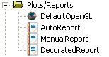 |
Figure: Plots/Reports Resource Tree Folder
The AutoReport ReportFile is used to report data every integrator step size once the mission is run.
Open the properties panel of the AutoReport ReportFile and remove all parameters in the Selected input field by clicking the Remove All button.
Add the following parameters to the Selected input field in the order specified: DefaultSC.UTCGregorian, DefaultSC.EarthMJ2000Eq.X, DefaultSC.EarthMJ2000Eq.Y, DefaultSC.EarthMJ2000Eq.Z, DefaultSC.EarthMJ2000Eq.VX, DefaultSC.EarthMJ2000Eq.VY, DefaultSC.EarthMJ2000Eq.VZ
Change the File input field to ./output/AutoReport.txt .
Verify that your settings are identical to the image below.
 |
Figure: AutoReport ReportFile Settings
Open the properties panel of the ManualReport ReportFile
Remove all parameters in the Selected input field by clicking the Remove All button.
Change the File input field to ./output/ManualReport.txt .
Verify that your settings are identical to the image below.
 |
Figure: ManualReport ReportFile Settings
The DecoratedReport ReportFile is identical to AutoReport ReportFile, besides the file path of the report.
Open the properties panel of the DecoratedReport ReportFile
Remove all parameters in the Selected input field by clicking the Remove All button.
Add the following parameters to the Selected input field in the order specified: DefaultSC.UTCGregorian, DefaultSC.EarthMJ2000Eq.X, DefaultSC.EarthMJ2000Eq.Y, DefaultSC.EarthMJ2000Eq.Z, DefaultSC.EarthMJ2000Eq.VX, DefaultSC.EarthMJ2000Eq.VY, DefaultSC.EarthMJ2000Eq.VZ
Change the File input field to ./output/DecoratedReport.txt .
Right click the Variables/Arrays folder and select Add --> String.
Navigate to the String group box and enter a string Name of stringVar.
Leave the Value input field blank.
Click the Create button and click OK to exit out of that panel.
Verify that your settings are identical to the image below.
 |
Figure: String Variable Creation
Select the Mission tab in the left pane to switch over to the Mission Sequence tree.
Right click on the Propagate1 command object and Insert After a ScriptEvent.
Right click on the newly created ScriptEvent(BeginScript) and Insert After a Propagate.
Verify that your settings are identical to the image below.
(Folder icons and command numbers may not be the same)
 |
Figure: Mission Tree Configuration 1
For the ManualReport ReportFile, we will add a Report command before and after the entire mission sequence to see what the initial state and final state is.
Right click the first Propagate command and Insert Before a Report command.
Add the same parameters as the (Configure AutoReport ReportFile):
DefaultSC.UTCGregorian, DefaultSC.EarthMJ2000Eq.X, DefaultSC.EarthMJ2000Eq.Y, DefaultSC.EarthMJ2000Eq.Z, DefaultSC.EarthMJ2000Eq.VX, DefaultSC.EarthMJ2000Eq.VY, DefaultSC.EarthMJ2000Eq.VZ
Select the ManualReport ReportFile before closing the Report command properties panel.
Right click the last Propagate command and Insert After a Report command.
Add the same parameters as above and select ManualReport for the ReportFile.
Verify that your settings are identical to the image below.
(Folder icons and command numbers may not be the same)
| 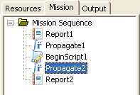 |
Figure: Mission Tree Configuration 2
Right click the first Propagate command and Insert Before a ScriptEvent command.
Open the properties panel for the first ScriptEvent
Enter the following between the BeginScript/EndScript text and click OK to exit the panel:
GMAT DecoratedReport.WriteHeaders = Off; stringVar = '=================================================='; Report DecoratedReport stringVar; stringVar = GMAT Report File in Time X Y Z VX VY VZ format; Report DecoratedReport stringVar; stringVar = '=================================================='; Report DecoratedReport stringVar; GMAT DecoratedReport.WriteHeaders = On;
Observe how WriteHeaders was turned off while outputting string data. If you don't do this, you will get the word stringVar showing up above each report output line.
Verify that your settings are identical to the image below.
(Folder icons and command numbers may not be the same)

Figure: Mission Tree Configuration 3
This concludes the configuration of the commands needed for the Mission Sequence.
Run the mission and navigate to the Output Tab.
Open the AutoReport file. The contents are a heading and data associated with the parameters in the heading at each propagator integration step.
The AutoReport output should look like the image below.
 |
Figure: AutoReport Output Results
Open the ManualReport file. The contents are a heading followed by the initial spacecraft state, a heading, and the final spacecraft state.
The ManualReport output should look like the image below.
| 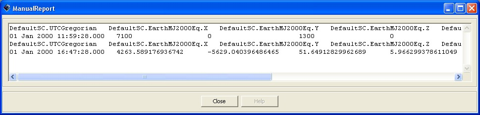 |
Figure: ManualReport Output Results
Open the DecoratedReport file. The contents are the custom heading using string variables, followed by the default heading, and data associated with the parameters in the default heading at each propagator integration step.
The DecoratedReport output should look like the image below.
 |
Figure: DecoratedReport Output Results
Table of Contents
The objective of this tutorial is to teach you how to create a spacecraft and a propagator, and then propagate the spacecraft to orbit perigee by following these basic steps:
Create a spacecraft and set its epoch and orbital elements.
Create and configure a propagator.
Modify the default Orbit View to visualize the trajectory.
Configure the mission sequence to propagate the spacecraft to periapsis.
In this section, you'll learn how to set a spacecraft's initial epoch and classical orbital elements. You'll need GMAT open with the default mission loaded. The default mission is loaded when a new session of the GMAT executable is started or when the New Mission button in the Toolbar is clicked.
Working from the GUI, you can create a new spacecraft by starting at the Resource Tree.
Right click on the Spacecraft folder, and select Add Spacecraft
Rename the spacecraft by right-clicking on the new spacecraft and selecting Rename from the drop down menu. For this tutorial, name the Spacecraft "Sat".
Double left click on the Spacecraft icon for the new spacecraft Sat in the Resource Tree to open the Spacecraft's dialog box. If it is not already selected, click on the Orbit Tab.
Left-click the Epoch Format drop-down menu and select UTCGregorian. You'll see the value in the Epoch field change to the UTC Gregorian epoch format.
Left-click in the Epoch field, and type the desired value of 22 Jul 2014 11:29:10.811 (or you can cut and paste from the text in this tutorial).
Save the changes by left clicking the Apply button at the bottom of the window. In the first figure below you see the orbit tab after correctly setting the epoch to the desired value.
We'll use the Keplerian orbital elements for this tutorial and we'll enter them with respect to Earth's MJ2000 Equator system.
Open the spacecraft dialog box for the spacecraft named Sat if it is not already open. (See section named Setting a Spacecraft's Epoch just above if you don't remember how to do this).
Change the state type to Keplerian by left-clicking on the State Type drop down menu and selecting "Keplerian". You will see the GUI reconfigure to the Keplerian representation.
Set the values in the GUI to those seen in the image below.
Compare the GUI to the screen capture below to ensure you have completed the steps correctly.
Save the changes and close the dialog box by pressing the OK button.
Save your work to the hard disk, press the save button located in the toolbar. If this is the first time you've saved the mission, you'll be prompted to provide a name and location for the file.
Figure: Spacecraft State Setup
In this section you'll learn how to create a new propagator from the GUI. This involves selecting a numerical integrator and a force model. Let's start by creating a new propagator from the GUI.
Locate the Propagators folder in the Resource Tree.
Right-click on the Propagators folder and select Add Propagator from the drop-down menu.
Rename Propagator1 as "LowEarthProp". To do this, right click on the newly created Propagator1 and select Rename. In the dialog box that appears, type LowEarthProp and hit OK.
Look at the dialog box for LowEarthProp by double left clicking on its icon under the Propagators folder. On the left side of the propagator dialog box you see where you can select the desired numerical integrator and configure it for your application. On the right hand side of the panel are combo boxes and lists that allow the user to set up the force model. Now let's look at how to configure a force model.
For this tutorial we will use an Earth 10x10 non-spherical gravity model, Jacchia-Roberts atmospheric model, and point mass perturbations from the Sun and Moon.
Open LowEarthProp from the Propagators folder in the Resource tree
Locate the Primary Bodies group on the Propagator dialog box. In the Gravity group box, change the degree and order to 10 by left clicking in the text field and typing in the values.
Locate the Atmosphere Model pull-down menu in the Drag group.
Left click on the pull-down menu and select JacchiaRoberts. (For now we will leave the default options for Jacchia-Roberts model)
Left click on the Select button to the right of the Point Masses text box input field, which brings up a list box containing all gravitational bodies that have not been included in the Primary Bodies list (See Figure below).
Left click on "Sun" under the available bodies list, and then left click the right arrow found between the available bodies and Selected Bodies list boxes.
Add the Moon (named Luna in GMAT) following the same procedure as the preceding step.
Left click on the OK button to save changes.
 |
Figure: Force Model Point Mass Configuration
Below is an illustration after correctly configuring the force model according to the instructions above.
 |
Figure: Force Model Configuration
In this section, we'll configure the default Orbit View plot to show the spacecraft we've created above. We'll remove DefaultSC from the list of objects to appear in the plot, add Sat, and change the view point so we can see the entire orbit when we propagate the spacecraft.
Locate the Output folder under the Resource Tree and double-left-click on DefaultOrbitView to open its dialog box.
Locate the View Object group, and find the Selected Spacecraft list.
Left click on DefaultSC under Selected Spacecraft and then click the left arrow button that appears to the left of the Selected Spacecraft list. This removes DefaultSC from the plot.
Locate the Spacecraft list in the View Object group.
Left click on Sat, and then left click on the right-pointing arrow button that appears to the right of the Spacecraft list.
The orbit for Sat is a highly eccentric orbit, and to view the entire orbit, we need to change the settings in the View Definition group.
Locate the View Point Vector settings in the View Definition group.
In the text boxes to the right of the ViewPointVector pull-down menu, enter 30000, -5000, and 5000 respectively as shown in illustration below
Uncheck the DrawXY Plane box located in the Drawing Options group.
See the figure below for the correct configuration of DefaultOrbitView after completing the steps above. When you are finished click Ok to save the changes.
 |
Figure: DefaultOrbitView Configuration
The last step in this tutorial is to propagate the spacecraft. To do this, we'll configure a propagate command in the mission and configure it to propagate until the spacecraft reaches orbit periapis.
Locate the Mission tab and left click on it to bring up the mission sequence. The Mission tab is located next to the Resource tab located near the upper left hand corner of the GMAT GUI.
Double left click on the event named Propagate1. You will see a dialog box that allows you to configure the command.
Locate the propagator list in the Propagators and Spacecraft group box.
Right click on the field where you see DefaultProp.
Left click on LowEarthProp and hit Ok.
 |
Figure: Propagate Command Propagator Select Dialog Configuration
To propagate the new spacecraft named Sat, we need to add it to the Spacecraft List group where originally you see DefaultSC. To propagate the Spacecraft named Sat:
Right-click in the field where you see DefaultSC.
Remove DefaultSC from the list by left clicking on it and then left-click on the left arrow button.
Left click on Sat and then left click on the right arrow button to add it to the list of spacecraft to propagate.
Left click on the OK button.
Below you see the dialog box after correctly configuring it to propagate the spacecraft named Sat.
 |
Figure: Propagate Command Space Object Select Dialog Configuration
The only remaining thing to do in configuring the propagate event, is to tell the propagator when to stop the propagation.
Locate the Stopping Conditions group, and right click in the field that currently says DefaultSC.ElapsedSecs located in the Parameter column.
Find the Object List and choose Sat instead of Default Sat. (This tells GMAT the stopping condition will be associated with the spacecraft named Sat.)
Locate the Property list in the middle of the dialog box and scroll down to locate Periapsis.
Left click on the word Periapsis, and then left click on the right-pointing arrow found in the center column of the dialog box.
The dialog box below shows an example after correctly performing these instructions. Once you are finished, click Ok to save your changes.
 |
Figure: Propagate Command Parameter Select Dialog Configuration
Having set the propagator, spacecraft, and stopping conditions above, the Propagate1 dialog box should appear as the screen capture below. When you are finished click Ok to save the changes you've made to Propagate1.
 |
Figure: Propagate Command Configuration
You have now configured the mission and it is time to run it and see the results.
Left-click on the Save button in the toolbar.
Left-click on the Run button in the toolbar.
You should see GMAT propagate the orbit and stop at orbit periapsis. The screen capture below summarizes what you should see after correctly completing this tutorial. You can manipulate the Orbit View plot using your mouse to zoom in and rotate the plot.
 |
Figure: Orbit View Plot after Mission Run
Final result: HohmannTransferDesign.script
The objective of this tutorial is to learn how to use differential correction (targeting) to perform a Hohmann transfer from a LEO parking orbit to a GEO mission orbit. In order to focus on the configuration of the differential correction process, you will make extensive use of the default configurations for spacecraft, propagators, and maneuvers. The target sequence employs two velocity-dirction maneuvers and two propagation sequences. The purpose of the first maneuver is to raise orbit apogee to 42165 km. The purpose of the second maneuver is to nearly circularize the orbit and yield a final eccentricity of 0.005. The differential corrector and associated commands are used to solve for the required maneuver magnitudes to reach the desired altitude eccentricity. The basic steps of this tutorial are:
Create and configure a differential corrector.
Modify the default OrbitView to visualize the trajectory.
Create two default impulsive maneuvers.
Add a target sequence to the mission to raise apogee to GEO altitude and circularize the orbit.
Run the mission, save the solution, and rerun the mission using the converged solution.
Begin by loading the default mission ( click the new mission button in the toolbar) or starting a new GMAT session. For this tutorial, we will use the default configurations for a spaceraft (DefaultSC), a propagator (DefaultProp), and maneuvers. DefaultSC is configured to a near circular orbit and DefaultProp is configured to use Earth as the central body with a gravity model of degree and order 4. The default impulsive burn model uses the Velocity Normal Binormal (VNB) coordinate system. You may want to open the dialog boxes for these objects and inspect them more closely as we will leave the settings of those objects at their default values.
To create a differential corrector:
Locate the Solvers folder in the Resource Tree and expand it if it is minimized.
Right-click the Boundary Value Solvers folder, select Add, and then select DifferentialCorrector.
You need to make minor modifications to default Orbit View so that the entire final orbit will fit in the graphics window.
Locate DefaultOrbitView in the Resource Tree, right-click on it, and select Open.
Change the SolverIterations input field, located in the Drawing Option group box, to the value Current.
Change ViewPointVector to 0, 0, 90000 respectively.
Change the ViewUpDefinition Axis to X.
Verify the configuration against the screen capture below, make any changes necessary, and click Ok on the DefaultOrbitView dialog box.
 |
Modifications to the Default OrbitView
You need two default maneuvers for this tutorial and we will rename the default maneuver and create a new maneuver:
Locate DefaultIB in the Resource Tree, right-click on it, select Rename, and change the name to dv1.
Right-click on the Burns folder, select Add-->ImpulsiveBurn.
Right-click on the impulsive burn created in the previous step, select Rename, and change the name to dv2.
Below you will create a targeting sequence to raise orbit apogee to GEOsynchronous altitude (~42165km) and then circularize the orbit. You'll begin by modifying the intial propagate command to propagate to periapsis. Next you will create the command structure and finally you will configure each command.
To configure the initial propagate sequence to propagate to periapsis, perform the following steps:
Left-click on the Mission tab to bring up the Mission Tree.
Right-click on Propagate1 and select Open from the menu.
Locate the Stopping Conditions group box and then right click on the set of ellipses next to the text "DefaultSC.ElapsedSecs". This will open the Parameter Select Dialog box.
Under the Object Properties list on the Parameter Select Dialog box, locate periapsis and double-click on it. Click the Ok button to close the Parameter Select Dialog box.
Click the Ok button on the Propagate 1 dialog box to save changes and close.
 |
Figure: Propagate1 Command
To determine the delta Vs required to raise the orbit apogee to GEO altitude and then circularize the orbit, you will employ a Targeting loop. Let's begin by creating the commands necessary to perform the targeting sequence. The figure below illustrates the configuration of the mission tree after you have completed the steps in this section.
 |
Figure: The Mission Tree for a Hohmann Transfer
Right-click on Propagate1 in the Mission Tree, select Insert After, and select Target.
Right-click on Target1 in the Mission Tree, select Insert After, and select Vary.
Right-click on Vary1 in the Mission Tree, select Insert After, and select Manuever.
Right-click on Maneuver1 in the Mission Tree, select Insert After, and select Propagate.
Right-click on Propagate2 in the Mission Tree, select Insert After, and select Achieve.
Right-click on Achieve1 in the Mission Tree, select Insert After, and select Vary.
Right-click on Vary2 in the Mission Tree, select Insert After, and select Manuever.
Right-click on Maneuver2 in the Mission Tree, select Insert After, and select Propagate.
Right-click on Propagate3 in the Mission Tree, select Insert After, and select Achieve.
Let's talk about the function of the command sequence you created above. The Vary commands define the variables the differential corrector can modify to achieve the goals defined in the Achieve commands. Because there are two variables (Vary commands) and two Achieve commands (constraints), this is a "square" targeting problem. Below you will configure the Vary commands to modify the maneuver values to achieve a final orbit radius of 42165 and an eccentricity of 0.005
Now you will configure the commands you created above to solve for the delta-Vs required to perform a Hohmann transfer.
Right-click on Target1 in the Mission Tree and select Open. Locate the ExitMode drop-down menu and set it to SaveAndContinue. This will save the converged solution of the targeting problem.
When you are finished, click OK to close the Target1 dialog box.

Figure: Target1 Command
Right-click on Vary1 in the Mission Tree and select Open. Notice that in the Variable SetUp group box, the variable is defined as dv1.Element1. This is the velocity component of dv1 in the local VNB system. So we do not need to change the targeter variable.
Locate the InitialValue text box and set it to 1.0.
Set the MaxStep to 0.5 and then click Ok to close the Vary1 dialog box.

Figure: Vary1 Command
Double-click on the Maneuver1 command in the Mission Tree. Notice that the command is set to apply dv1 to DefaultSC so we do not need to change any settings for this command. Click Ok to close the Maneuver1 dialog box.

Figure: Maneuver1 Command
Double-click on the Propagate2 dialog box. Use the same procedure shown in the sections above to set the stopping condtion to Apoapsis and then click Ok to close the dialog box.

Figure: Propagate2 Command
Double-click on the
Achieve1command in the Mission Tree. Notice that the goal is set to DefaultSC.Earth.RMAG. So we do not need to change any settings for this command. Click Ok to close the dialog box.
Figure: Achieve1 Command
Double-click on Vary2 in the Mission Tree.
Click the Edit button next to Variable text box.
Click on dv2 under the Object List.
Double-click on Element1 under the ObjectProperties.
Click Ok to close the ParameterSelect dialog box.

Figure: Parameter Select for Vary2
Locate the initial value text box and set it to 1.0.
Locate the MaxStep text box and set it to 0.2. Click Ok to close the Vary1 dialog box.

Figure: Vary2 Command
Double-click on the
Maneuver2command in the Mission Tree.Locate the
Burncombo box and change it todv2. Click OK to close the Maneuver2 dialog box.
Figure: Maneuver2 Command
Double-click on the Propagate3 dialog box. Use the same procedure shown above to set the stopping condtion to
ElapsedDaysof 1.0. box.
Figure: Propagate3 Command
Finally, double-click on the Achieve2 command in the Mission Tree.
Click on the Edit button next to the Goal text box.
Locate
ECCin the Object Properties list and double-click on it. Click Ok to close the Parameter Select Dialog Box.Change the
Valueto 0.005.Change the
Toleranceto 0.0001
Figure: Achieve2 Command
Before running the mission, click on the Save button in the toolbar and save your file to the desired location. Now click on the Run button in the Toolbar. As the mission is running, you will see the Differetial Corrector try different maneuvers values resulting in trajectory iterations in light blue. These are Differential Corrector iterations, and perturbation passes to determine the Jacobian of the two-point boundary value problem. After the mission is run, the OrbitView should appear similar to the image shown below.
 |
Figure: Output After Final Propagate Sequence
You can save the resulting solution so that if you make small changes to the problem and retarget, the initial guess for subsequent runs will use the solution from your work above. .
Double-click on Target1 in the Mission Tree.
Left-click on Apply Corrections.
Rerun the mission by clicking the Run button in the toolbar. If you inspect the results in the message window you should see that the targetting only took one iteration because it started from the solution!
Final result: HohmannTransferDesign.script
In this tutorial, you will learn how to use control flow and targeting in GMAT to maintain a Low-Earth orbit in the presense of drag. The area-to-mass ratio of the spacecraft is large to cause a rapid lowering of the orbit semimajor axis for the sake of simulation time. However, the process used in this script is useful for generating delta-V estimates for LEO stationkeeping of real-world missions. The basic steps of this tutorial are:
Create and configure a spacecraft, impulsive maneuver, propagator, XYPlot, and differential corrector.
Create a conditional loop using a while statement that propagates for 10 days.
Run the mission and observe the behavior if there is no orbit control strategy.
Create a target sequence nested in an if statement that executes if altitude is below 342 km.
Run the mission and observe the behavior of orbit altitude with the control strategy implemented in step 4.
In this section, you will configure a model of a LEO spacecraft, a propopagator , a maneuver, and an XY plot to visualize the SMA during the control sequence developed in the next section.
Starting from the Resource Tree, right-click on DefaultSC, select rename, and change the name to LEOsat.
Right-click on LEOSat, locate the EpochFormat combo box, and change the Epoch Format to UTCGregorian.
Set the Epoch to 05 Jan 01 2010 00:00:00.000
Set the state using the following values: X = -4083.9 , Y = 4691.8 , Z = -2576.7 , VX = -4.252 , VY = -5.509 , VZ = -3.284
Verify the configuration against the screen capture below, make any changes necessary, and click Ok on the LEOsat dialog box.
 |
Figure: LEOsat Spacecraft Object
Right-click on DefaultProp, select Rename, and change the name to LEOprop.
Right-click on DefaultProp, and select Open.
Locate the Drag Model group box and change the Atmosphere model to JacchiaRoberts.
Click the select button to the right of the Point Masses list. Add the Sun, and Luna as Point Masses to the right-hand side list and click Ok.
Check the Use Solar Radiation Pressure box
Verify the configuration against the screen capture below, make any changes necessary, and click Ok on the LEOprop dialog box.
 |
Figure: LEOprop Propagator Object
We'll use the default configurations for a maneuver and a differential corrector so simply follow the steps below to create default configurations of those objects.
Locate the Solvers folder under the Resource Tree and expand it if it is minimized.
Right-click on the Boundary Value Solvers folder and select DifferentialCorrector.
Rename the new Differential Corrector DC using steps described above.
Right-click on DefaultIB in the Burns folder, select Rename, and change the name to DeltaV.
You will implement this mission in two parts. The first part is to add a While loop to the mission sequence, put a propagate sequence in the While loop, and configure the loop to propagate for about 10 days. At this point in the tutorial, there is no orbit control strategy implemented and upon running the mission you will see the SMA drop below the allowed value of 340 km. In the second part, you will implement a control sequence to ensure SMA remains above approximately 340 km. Below is an illustration of the Mission Tree after you have completed Part 1.
 |
Figure: Mission Tree, Part I
Starting from the Mission Tree, right-click on Propagate1, select Insert After, locate Control Logic in the menu, and select While.
Right-click on Propagate1 and select Delete.
Right-click on While1, select Insert After, and select Propagate.
After While1, insert another Propagate
Now you will configure the While1 to continue if the ElapsedDays of LEOsat is less than 10 days and configure the Propagate2 command to take a single propagation step.
Open the dialog box for the Propagate1 command.
Double-left click in the Stopping Conditions
Parameterfield to select the textLEOSat.ElapsedSecs. Press the delete key to delete the text.Double-left click in the Stopping Conditions
Conditionfield to select the text12000. Press the delete key to delete the text.Click OK to close the Propagate1 dialog box.

Figure: Propagate1 Command
Open the dialog box for the While1 command.
Notice that the left-hand side of the conditional statement is already set to
LEOSat.ElapsedDaysand the conditional operator is already set to "less-than". We will leave those fields at their default.Change the right-hand side text box to the value 10.0.
Click OK to close the While1 dialog box.
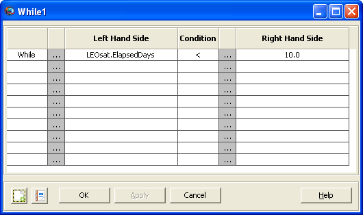 Figure: While1 Command
Now let's run the mission and observe the resulting altitude evolution by clicking Run in the Toolbar. You should see a plot that looks similar to the illustration below. Notice that the alttitude drops below the allowed value of 342 km. In the next part of this tutorial, you will implement a control strategy to prohibit altitude from breaking the constraint.
| 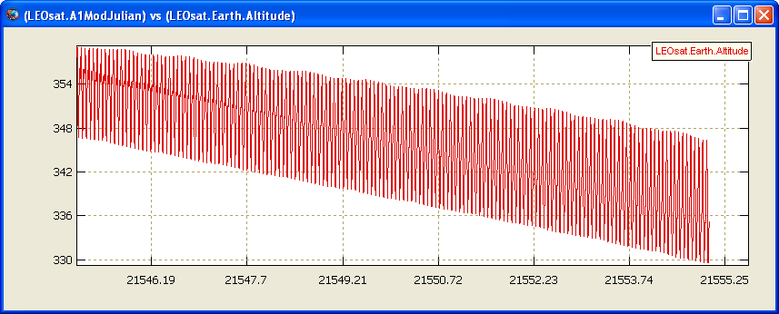 |
Figure: Output After Part 1
Below you will implement a control strategy that performs a Hohmann transfer if altitude drops below 342 km. If you have not taken the Hohmann Transfer tutorial you may wish to do so now. Below we assume you have basic knowledge of how to configure a Hohmann transfer in GMAT and do not provide all detailed steps. The figure below illustrates the Mission Tree afer you have completed configuring the command sequence below.
 |
Figure: Mission Tree, Part II
Add an If statement after the Propagate2 Command.
Add a Vary statement inside of the Target1 Command.
Add a Maneuver after the Vary1 Command.
Add an Achieve command after the Vary1 Command.
Add a Propagate command after the Achieve1 Command.
Add a Vary Command after the Propagate3 Command.
Add a Maneuver after the Vary2 Command.
Add an Achieve after the Maneuver2 Command.
Now you will configure the commands you created above to perform the Hohman transfer control sequence.
Open the dialog box for the If1 command
Set the left-hand side value to LEOsat.Altitude
Set the right-hand side value to 342 and click OK to close the If1 dialog box.
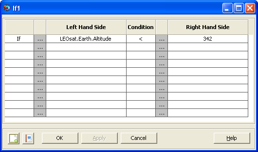 Figure: If1 Command
Open the dialog box for the Vary1 Command.
Change the IntialValue field to 0.002 and click OK to close.

Figure: Vary1 Command
Open the dialog box for the Achieve1 Command.
Change the left hand side value to LEOsat.Earth.SMA.
Change the right hand side to 6734 and then click OK to close.
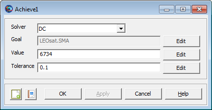 Figure: Achieve1 Command
The views that you created are good for seeing how well the mission sequence is keeping LEOsat in its orbit. The SMA view shows some thickness to it while the RAAN view shows barely any at all. You may now try and change the mission parameters as outlined in the mission tree section to see how the spacecraft's drift is affected.
| 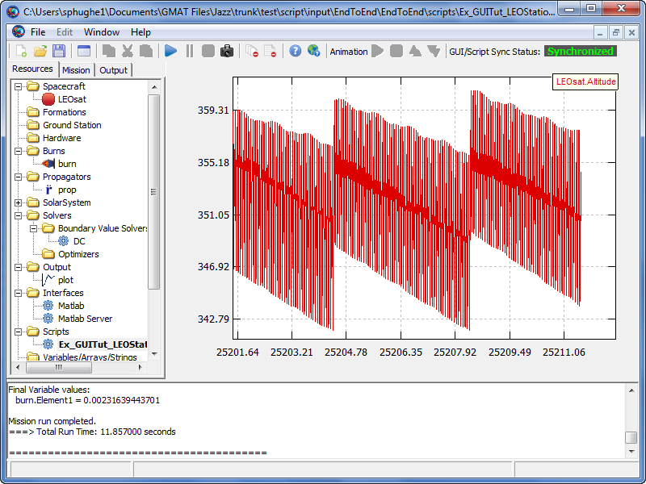 |
Figure: Output
This tutorial finds the minimum value to satisfy a function. This tutorial is intended to show how GMAT's optimizer works. Uses of optimization in a true mission include minimizing the amount of fuel or minimum flight time required to achieve certain characteristics. Learning how to optimize a mission sequence also involves learning about optimizers, nonlinear constraints, and the minimize command.
You can download the script file and run it beforehand to see the final results of this tutorial: Ex_AlgebraicOptimization.script
Basic Understanding of how to create and propagate a spacecraft, as in Tutorial Creating and Propagating a Spacecraft
Variables/Strings/Arrays
Variable X1 = 0
Variable X2 = 0
Variable F = 0
Variable G = 0
Solvers
SQPfmincon Optimizer (Figure below shows the resulting SQPfmincon window)
Tol Fun = .0001
Tol Con = .0001
Tol X = .01
Max Fun Evals = 1000
Max Iter = 250
Diff Min Change = .000001
Diff Max Change = .01
Display : Iter
Diagnostics
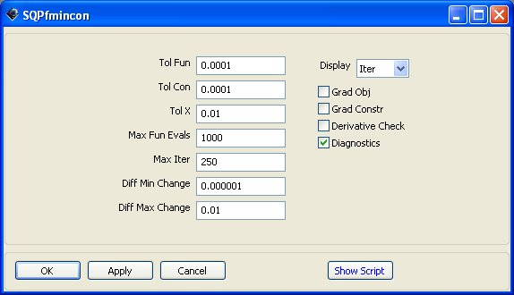 Figure: SQPfmincon Boundary Value Solver Object
Plots/Reports
Data ReportFile
Clear Parameter List
Saved at ./output/SampleMissions/Ex_AlgebraicOptimization.report

Figure: Data ReportFile System Object
As said above, values X1 and X2 are variables of function F that is to be optimized. The sum of these values form a constraint G, G=X1+X2=8. The final values of F, X1, X2 are sent to a report file.
Set up the command sequence as in the Optimize sequence below. Optimization is done in Equation1, via the optimization criterion function F, using the Matlab routine SQPfmincon. For the constraint G, since a function cannot be a constraint in itself, the value G is used. This is done in Equation2.
Optimize
Vary X1 using SQPfmincon
Upper = 10, Lower = -10
Vary X2 using SQPfmincon
Upper = 10, Lower = -10
Equation1 F = ( X1 - 2 )2 + ( X2 - 2 )2
Minimize the value of F using SQPfmincon
Equation2 G = X2 + X1
Nonlinear Constraint G = 8 using SQPfmincon
Report to file Data the values of variables F, G, X1, X2
 |
Figure: Vary X1 Command
 |
Figure: Equation1 Command
| 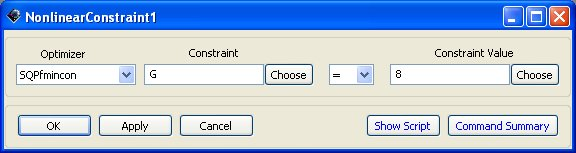 |
Figure: Nonlinear Constraint Command
 |
Figure: Minimize F Command
| 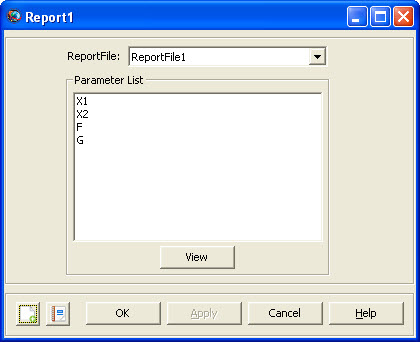 |
Figure: Report Command
|
|
| |||
| Figure: Algebraic Optimization Resource, Mission, and Output Trees | |||||


The goal of this mission is to show how to target a transfer trajectory from an Earth parking orbit to a Mars orbit via B-Plane targeting. Given a specified inclination for the final orbit, we solve for the velocity of the spacecraft in certain directions in order to determine a transfer trajectory.
You can download the script file and run it beforehand to see the final results of this tutorial: MarsBPlaneTutorial.script
Basic understanding of B-Planes and their usage in targeting a position.
Tutorials:
For this tutorial, four impulsive burns are used to maneuver a single spacecraft, and three propagators are used for different portions of the spacecraft's propagation. The propagators use different point masses to account for the dominant gravity fields during the spacecraft's trajectory. Two OpenGL plots are used to track the path at the starting point and ending point of the mission. Finally, four coordinate systems are used to define the spacecraft's position - based, accordingly, on Earth, Mars, the ecliptic, and the equatorial plane of the Earth.
Spacecraft: MarsSupply
Impulsive Burns: TOI, MarsMCC, MarsBPlane, and MarsOI
Propagators: EarthProp, SunProp, and MarsProp
Differential Corrector: MarsTOIDC
Plots/Reports: EarthView and MarsView and a data report
Coordinate Systems: MarsMJ2000Eq, SunMJ2kEc, SunMJ2kEq, and EarthSunRot
Spacecraft
Add a spacecraft to the resource tree and rename it MarsSupply
Set the epoch format to TAIModJulian
Use an Epoch of 21160
Set the State Type to Keplerian
See Assumptions to modify spacecraft element properties
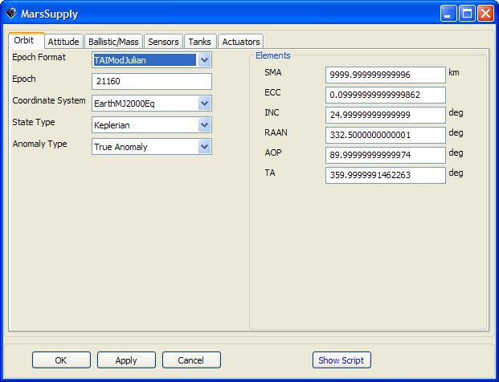 Figure: MarsSupply Spacecraft Object
Propagators
Remove all primary bodies and gravity models from all propagators
EarthProp
Use an Integrator max step size of 86400 sec
Include only a Geocentric point mass

Figure: EarthProp Propagator Object
SunProp
Set the Integrator max step size to 160000 sec
Set the Integrator max step attempts to 500
Include heliocentric, geocentric, and lunar point masses
MarsProp includes only a martian point mass
Set the Integrator max step size to 86400 sec
Set the Integrator max step attempts to 100
Burns
Change the TOI vector V to 2.85 km/s
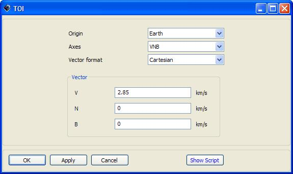 Figure: TOI Impulsive Burn Object
Change the MarsMCC vector N to - 0.8593 km/s with a heliocentric origin
Change the MarsBPlane vector V to - 0.3309 km/s and B to 0.6917 km/s with a heliocentric origin
Change the MarsOI vector V to - 4 km/s with a martian origin
Coordinate Systems
EarthSunRot
Set the Type of Axes to ObjectReferenced
Make Sun the Primary body and Earth the Secondary body

Figure: EarthSunCoord Coordinate System Object
SunMJ2kEc
Apply a heliocentric origin to the system
Use MJ2000Ec as the Type of Axes
SunMJ2kEq
Apply a heliocentric origin to the system
Use MJ2000Eq as the Type of Axes
MarsMJ2000Eq
Apply a martian origin to the system
Use MJ2000Eq as the Type of Axes
Solvers
Add a differential corrector to the Boundary Value Solvers folder in the Solvers folder under the resource tree and rename it MarsTOIDC
Use the Targeter Text File targeter_MarsTOIDC.data
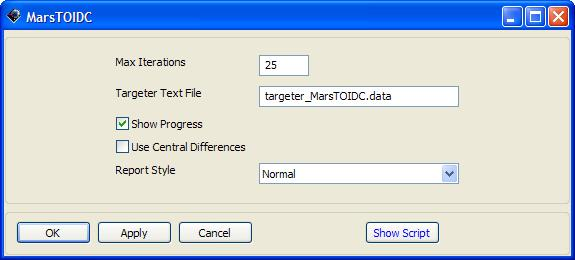 Figure: MarsTOIDC Differential Corrector Object
Plots/Reports
Add a Report file to the Plots/Reports folder under the resource tree
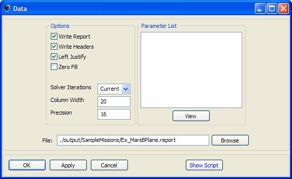 Figure: Data Data Report Object
EarthView
Add the Sun to the Selected Celestial Objects field
Check the Draw Grid and Draw Sun Line boxes in the Drawing Option group box
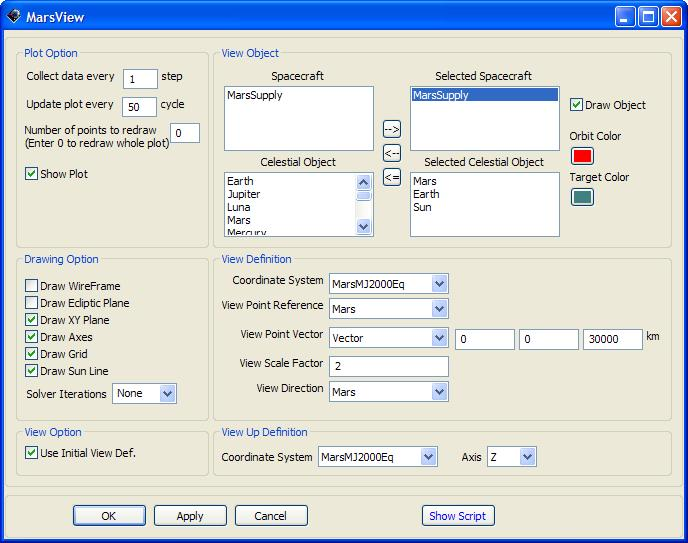 Figure: MarsView OpenGL Plot Object
MarsView
Add the Sun and Mars to the Selected Celestial Objects field
Use MarsMJ2000Eq coordinate system in the View Definition and View Up Definition group boxes
Use a View Scale Factor of 2
Check the Draw Grid and Draw Sun Line boxes in the Drawing Option group box
This mission begins at the spacecraft orbit's Earth periapsis point, then moves to a Mars transfer trajectory, and ends in an elliptical orbit about Mars. The transfer trajectory calls two targeting sequences, one to obtain an inclination, and the other to obtain a B-Plane position. In the first targeting sequence, the inclination is achieved, and is then used when the second sequence targets a distinct B-Plane parameter. After the second targeting sequence is accomplished, the spacecraft is slowed by a final maneuver that puts it into the elliptical orbit and continues to propagate for another half day. During each Propagate and Maneuver command before and after the targeting sequences, reports are added for tracking and analysis purposes, to monitor the spacecraft's Cartesian coordinates and velocity vectors.
Initial Propagate and Maneuver Sequence
For Equation 1, adding a report automatically turns the headers on, so be sure the setting is off to avoid including unnecessary text in the report.
Propagate 1 simply propagates the spacecraft to Earth's periapsis.
Maneuver 1 applies a ΔV in the V direction, to propel the spacecraft for 160 days through Propagate commands 2 and 3. When the propagators switch, the dominant point mass gravity field changes from Earth to Sun.
Targeting Sequences
Target 1 includes Vary, Maneuver, and Achieve commands, to prompt GMAT into achieving the desired inclination. The maneuver applies the MarsMCC impulsive burn to achieve a ΔV in the N direction, so the spacecraft can reach 24.677° and begin its final maneuver.
Target 2 includes two Vary, two Propagate, two Achieve, and one Maneuver commands, to target a BdotT of 10,000 km and BdotR of – 10,000 km about Mars' periapsis. The maneuver applies the MarsBPlane impulsive burn, to achieve a ΔV in both the V and B velocity directions.
Final Propagate and Maneuver Sequence
Maneuver 4 applies a ΔV in the V direction, to slow the spacecraft to the velocity that is necessary to obtain an elliptical orbit about Mars.
The final command, Propagate 6, propagates the spacecraft for an additional half day, so the plot can show the entire elliptical trajectory around Mars.
Report 1:
Add the Cartesian coordinates X, Y, and Z, and all velocity vectors, VX, VY, and VZ, to the parameters list, to report them for the MarsSupply spacecraft
Do not remove the A1ModJulian parameter
Equation 1: set Data.WriteHeaders = Off
Propagate 1:
Use the EarthProp propagator
Set the stopping condition parameter to be Earth's periapsis
Report 2: refer to Report 1 for parameters list
Maneuver 1: utilize the TOI burn
Propagate 2:
Use the EarthProp propagator
Set the stopping condition to 25 elapsed days
Report 4: refer to Report 1 for parameters list
Propagate 3:
Use the SunProp propagator
Set the stopping condition to 135 elapsed days
Report 5: refer to Report 1 for parameters list
| 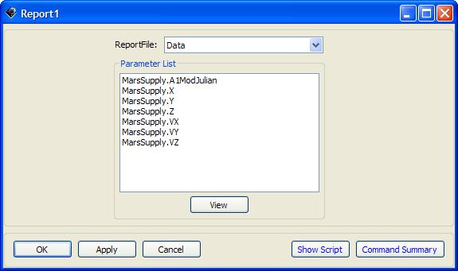 |
Figure: Report1 Report Command
| 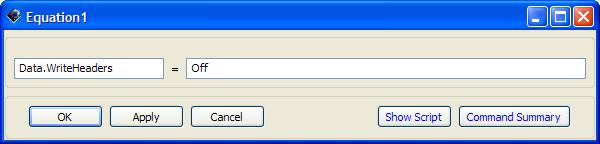 |
Figure: Equation1 Equation Command
 |
Figure: Propagate1 Propagate Command
| 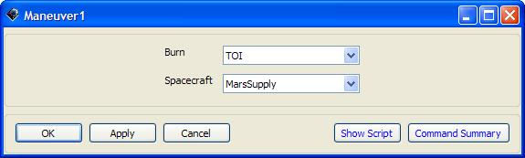 |
Figure: Maneuver1 Maneuver Command
Target 1:
Vary 1:
Set the variable to N using the MarsMCC impulsive burn
Set the Initial Value to 0 km/s
Set the Perturbation to 0.1
Define the Lower (Limit) to be - 8 km/s
Define the Upper (Limit) to be 8 km/s
Use a Max Step of 0.5 km/s
Maneuver 2: utilize the MarsMCC impulsive burn
Achieve 1:
Goal:
Highlight MarsSupply in the Object List menu
Select the SunMJ2kEq coordinate system from the drop down menu
Add INC to the Selected Value(s) field
Set the Value to 24.677°
Use a Tolerance of 0.001°
Report 6: refer to Report 1 for parameters list

Figure: Target1 Target Command

Figure: Vary1 Vary Command
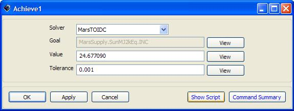 Figure: Achieve1 Achieve Command
Target 2:
Vary 2:
Set the second Variable to V using the MarBPlane impulsive burn
Use an Initial Value to - 0.2338 km/s
Change the Perturbation to 0.001
Define the Lower (Limit) to be - 3 km/s
Define the Upper (Limit) to be 3 km/s
Use a Max Step of 0.1 km/s
Vary 3:
Set the third Variable to B using the MarsBPlane impulsive burn
Use an Initial Value of 0.6683 km/s
Change the Perturbation to 0.001
Define the Lower (Limit) to be - 3 km/s
Define the Upper (Limit) to be 3 km/s
Use a Max Step of 0.12 km/s
Maneuver 3: Utilizes the MarsBPlane impulsive burn
Propagate 4:
Use the SunProp propagator
Set the stopping condition parameter to 50 elapsed days
Propagate 5:
Use the MarsProp propagator
Set the stopping condition parameter to be Mars' periapsis
Achieve 2:
Goal:
Highlight BdotT
Select the MarsMJ2000Eq coordinate system from the drop down menu
Add BdotT to the Selected Value(s) field
Value = 10000 km
Tolerance = 50 km
Achieve 3:
Goal:
Highlight BdotR
Select the MarsMJ2000Eq coordinate system from the drop down menu
Add BdotR to the Selected Value(s) field
Value = -10000 km
Tolerance = 50 km
Report 7: refer to Report 1 for parameters list
Maneuver 4: utilize the MarsOI impulsive burn
Report 8: refer to Report 1 for parameters list
Propagate 6:
Use the MarsProp propagator
Set the stopping condition to 25 elapsed days
Report 9: refer to Report 1 for the parameter list
|
|
| |||
| Figure: Resource, Mission, and Output Trees | |||||

You have now configured the mission, and it is time to run it and see the results. First, save the changes you've made and then click the Run button (green arrow on the tool bar) to run the mission. The screen capture below summarizes what you should see after correctly completing this tutorial.
| 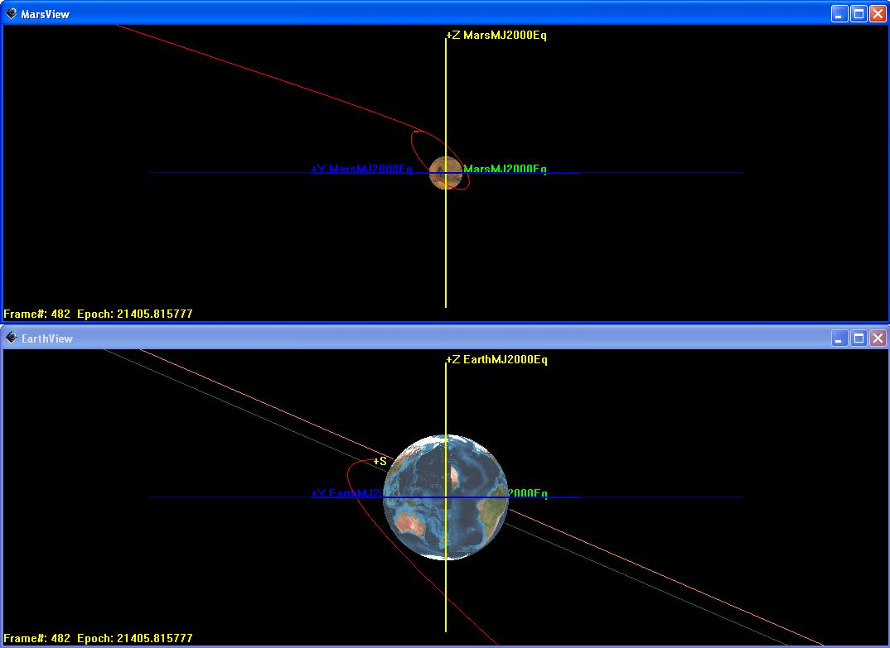 |
Figure: Output
Table of Contents
- I. Resources
- Array — A two-dimensional numeric array variable
- Barycenter — A barycenter.
- CelestialBodies — A celestial body.
- CoordinateSystem — A coordinate system.
- DifferentialCorrector — A differential corrector.
- EphemerisFile — An ephemeris file.
- EphemerisPropagator — Under Construction.
- FiniteBurn — A finite burn.
- Formation — An ephemeris file.
- FuelTank — A fuel tank.
- GroundStation — Under Construction.
- ImpulsiveBurn — A impulsive burn.
- LibrationPoint — A libration point.
- MATLABFunction — Under Construction.
- OpenGLPlot — A OpenGL Plot.
- Propagator — A propagator.
- ReportFile — A ReportFile.
- SolarSystem — A solar system.
- Spacecraft — A spacecraft
- SQP — A SQP(fmincon).
- String — A string.
- Thruster — A thruster.
- Variable — A variable.
- VF13adOptimizer — Under Construction.
- XYPlot — A XY Plot.
- II. Commands
- Achieve — Perform an achieve command
- BeginFiniteBurn — Perform a begin finite burn
- BeginMissionSequence — Under construction.
- CallFunction — Perform a call function
- Else — Perform an else statement
- EndFiniteBurn — Under construction.
- Equation — Perform an equation command
- For — Perform a for loop
- If — Perform an if command
- Maneuver — Perform a maneuver command
- Minimize — Perform a minimize command
- NonLinearConstraint — Apply nonlinear constraint
- Optimize — Perform an optimize command
- PenUp — Under construction.
- PenDown — Under construction.
- Propagate — Perform a propagate command
- Report — Output a report
- Save — Under construction.
- ScriptEvent — Perform a ScriptEvent command
- Stop — Perform a stop command
- Target — Perform a targeting sequence
- Toggle — Perform a toggle command
- Vary — Perform a vary command
- While — Run a while loop
Table of Contents
- Array — A two-dimensional numeric array variable
- Barycenter — A barycenter.
- CelestialBodies — A celestial body.
- CoordinateSystem — A coordinate system.
- DifferentialCorrector — A differential corrector.
- EphemerisFile — An ephemeris file.
- EphemerisPropagator — Under Construction.
- FiniteBurn — A finite burn.
- Formation — An ephemeris file.
- FuelTank — A fuel tank.
- GroundStation — Under Construction.
- ImpulsiveBurn — A impulsive burn.
- LibrationPoint — A libration point.
- MATLABFunction — Under Construction.
- OpenGLPlot — A OpenGL Plot.
- Propagator — A propagator.
- ReportFile — A ReportFile.
- SolarSystem — A solar system.
- Spacecraft — A spacecraft
- SQP — A SQP(fmincon).
- String — A string.
- Thruster — A thruster.
- Variable — A variable.
- VF13adOptimizer — Under Construction.
- XYPlot — A XY Plot.
Array
Array — A two-dimensional numeric array variable
Synopsis
Create Arrayname[rows,columns];name(row,column) =value; …
Description
An array is a numeric variable that can contain multiple values in either one or two dimensions (i.e. a matrix).
Fields
$ITEM NAME. WILL MOST LIKELY USE COURIER NEW HTML FORMATTING$ | $ITEM DESCRIPTION$
| ||||||
$ITEM NAME. WILL MOST LIKELY USE COURIER NEW HTML FORMATTING$ | $ITEM DESCRIPTION$
|
Interactions
Report Commands | Report commands can be used to retrieve information within arrays or from the entire array. |
Examples
Example 1. Creating an array
This example creates an empty one-dimensional array with 5 elements.
Create Array Array1[1,5];
Example 2. Creating and populating a matrix
This example creates the identity matrix of size 2 and names
it I:
Create Array I[2,2];
I(1,1) = 1;
I(1,2) = 0;
I(2,1) = 0;
I(2,2) = 1;Barycenter
Barycenter — A barycenter.
Synopsis
Create Barycenternamename.BodyNames = {bodyName1,bodyName2,...,bodyNameN} …
Description
A barycenter is the center of mass of one or more celestial bodies and can be used as the origin of a CoordinateSystem, a reference point in an OrbitView, or as one of the points in a LibrationPoint.
Fields
Interactions
Coordinate Systems | Interacts with the barycenter object selecting it as the origin of the coordinate system or as a primary or secondary point for defining the axes. |
OpenGL Plot | It can be selected as a celestial object to be drawn onto the plot, a View Point Reference, or the View Direction within the dialog box. |
CelestialBodies
Celestial Bodies — A celestial body.
Synopsis
Create Planetnamename.field=value…
Description
The Celestial Bodies are the main bodies of the Solar System and the Moon. They are part of the resource tree and are under Solar System. They can be selected for a large variety of options for points of reference.
Fields
Fields Associated with All Celestial Bodies
Mu | The Mu field allows the user to define the gravitational parameter of a celestial body.
| ||||||
Equatorial Radius | The EquatorialRadius field allows the user to define the equatorial radius of a celestial body.
| ||||||
Flattening | The Flattening field allows the user to define the mass of a celestial body.
| ||||||
InitialEpoch | The InitialEpoch field allows the user to define the initial epoch, in A1 Modified Julian Date, for a celestial body. The initial epoch is only used when the user selects Analytic for the Ephemeris field on the solar system. In this case, GMAT solves Kepler's problem to determine theposition and velocity of a celestial body, using the initial epoch and state information described below.
| ||||||
SMA | The SMA field allows the user to define the semimajor axis of a celestial body's orbit about its central body. (Only used when the user selects Analytic for the Ephemeris field on the Solar System.)
| ||||||
ECC | The ECC field allows the user to define the eccentricity of a celestial body's orbit about its central body. (Only used when the user selects Analytic for the Ephemeris field on the Solar System.)
| ||||||
INC | The INC field allows the user to define the inclination of a celestial body's orbit about its central body, in the FK5 coordinate system. (Only used when the user selects Analytic for the Ephemeris field on the Solar System.)
| ||||||
RAAN | The RAAN field allows the user to define the right ascension of the ascending node of a celestialbody's orbit about its central body, in the FK5 coordinate system. (Only used when the user selects Analytic for the Ephemeris field on the Solar System.)
| ||||||
AOP | The AOP field allows the user to define the argument of periapsis of a celestial body's orbit about its central body, in the FK5 coordinate system. (Only used when the user selects Analytic for the Ephemeris field on the Solar System.)
| ||||||
TA | The TA field allows the user to define the true anomaly of a celestial body's orbit about its central body. (Only used when the user selects Analytic for the Ephemeris field on the Solar System.)
|
Special Fields Associated with Earth
NutationUpdate Interval | The NutationUpdateInterval field, on the Earth Celestial Body, determines how often GMAT updates the Nutation matrix used in FK5 reduction. If NutationUpdateInterval is set to zero, the Nutation is updated every time a request is made to calculate the orientation of the Earth. If NutationUpdateInterval is set to a real number greater than zero, then GMAT only updates the Nutation matrix if the number of seconds defined by NutationUpdateInterval have elapsed since the last request for the Earth's orientation data.
|
Special Fields Associated with Luna
RotationData Source | The RotationDataSource, on the Luna Celestial Body, determines what source GMAT uses to obtain data describing the orientation of the moon with respect to the FK5 system. The RotationDataSource field is only used for lunar orientation data when calculating moon-based coordinate systems with the axes types of {Fixed} and {Equator}.
|
Interactions
Coordinate System | Interacts with the celestial body in that the body can be selected as the origin of the coordinate system or as a primary or secondary point for defining the axes. |
OpenGL plot | Interacts with a celestial body in a number of ways. It can be selected to be drawn onto the plot, with the color of the orbit an option. A celestial body can also be selected as the View Point Reference or the View Direction. |
Propagator | Can interact with a celestial body in a number of ways. Under the Force Model heading, any celestial body can be chosen for use as the central body, as the primary bodies, and the secondary bodies. |
Bary Center | Can interact with celestial bodies in that a bary center is calculated using some number of celestial bodies which can be selected. |
Libration point | Can interact with celestial bodies in that a libration point is calculated using two celestial bodies which can be selected. |
Spacecraft | Interacts with celestial bodies in that for a number of parameters describe how the spacecraft is positioned in relation to a celestial body. This can include the periapsis, apoapsis, and altitude, as well as a great many of other parameters. |
Examples
Create Planet Earth;
GMAT Earth.BodyType = 'Planet';
GMAT Earth.Mass = 5.973331957140716e+024;
GMAT Earth.EquatorialRadius = 6378.1363;
GMAT Earth.Flattening = 0.0033527;
GMAT Earth.PolarRadius = 6356.75232242699;
GMAT Earth.Mu = 398600.4415;
GMAT Earth.PosVelSource = 'DE_405';
GMAT Earth.State = [ 0 0 0 0 0 0 ];
GMAT Earth.StateTime = 0;
GMAT Earth.CentralBody = 'Sun';
GMAT Earth.BodyNumber = 2;
GMAT Earth.RefBodyNumber = 3;
GMAT Earth.SourceFilename = './files/planetary_ephem/de/winp1941.405';
GMAT Earth.SourceFile = ./files/planetary_ephem/de/winp1941.405;
GMAT Earth.UsePotentialFileFlag = false;
GMAT Earth.PotentialFileName = './files/gravity/earth/JGM2.cof';
GMAT Earth.AngularVelocity = [ 0 0 7.2921158553e-005 ];
GMAT Earth.HourAngle = 0;
GMAT Earth.AtmosphereModelName = '';
GMAT Earth.Order = 4;
GMAT Earth.Degree = 4;
GMAT Earth.RotationDataSource = 'NotApplicable';
GMAT Earth.NutationUpdateInterval = 60;CoordinateSystem
Coordinate Systems — A coordinate system.
Synopsis
Create CoordinateSystemnamename.field=value…
Description
Coordinate Systems are critical to GMAT for several reasons. They are what every object represented within the software is referenced to. They are used by GMAT as the basis for which all calculations are made. They also provide the reference for any OpenGL Plot that is created.
Interactions
Thruster | The Thruster object allows you to set a coordinate system as its reference. |
Spacecraft | In the spacecraft dialog box you may change what coordinate system the spacecraft's position is defined in reference, whatever the state type may be set as. |
OpenGL Plot | Coordinate Systems are very key to the display of OpenGL Plots. They rely on coordinate systems to set how exactly the view of the plot will look using both the View Definition and View Up Definition sections of the OpenGL Plot dialog box. |
Parameter Select Dialog Box | Whenever you may select a parameter using the parameter select dialog box, you have the option of selecting certain options such X, Y, Z, and several others that will require to set a coordinate system for them to reference. |
DifferentialCorrector
Differential Corrector — A differential corrector.
Synopsis
Create DifferentialCorrectornamename.field=value…
Description
A differential corrector is a numerical solver for solving two-point boundary value problems. The DC in GMAT uses a simple shooting method where the derivatives are determined using finite differencing. In the mission sequence, you use the differential corrector object in a Target sequence to solve two-point value problems. For example, differential correctors are often used to determine the maneuver components required to achieve desired orbital conditions, say, B-plane conditions at a planetary flyby.
You must create and configure a differential corrector object according to your application by setting numerical properties of the solver such as tolerance and maximum iterations. You can also select among different output options that show increasing levels of information for each differential corrector iteration.
The allowable settings for a differential corrector are shown in the GUI screen shots and reference table below. You can learn more about how to use a DC in a targeting sequence by reading the help files for Target, Vary, and Achieve.
Fields
MaximumIterations | The MaximumIterations field allows the user to set the maximum number of iterations the differential corrector is allowed during the attempt to find a solution. If the maximum iterations is reached, GMAT exits the target loop and continues to the next command in the mission sequence. In this case, the objects retain their states as of the last nominal pass through the targeting loop.
| ||||||
DerivativeMethod | The DerivativeMethod field allows the user to choose between one-sided and central differencing for numerically determining the Jacobian matrix.
| ||||||
ShowProgress | When the ShowProgress field is set to true, then data illustrating the progress of the differential correction process are written to the message window. The message window is updated with information on the current control variable values and the contraint variances for both on perturbation and iteration passes. When the ShowProgress field is set to false, no information on the progress of the differential correction process is displayed.
| ||||||
ReportStyle | The ReportStyle field allows the user to control the amount and type of information written to the file defined in the ReportFile field. Currently, the Normal and Concise options contain the same information: the Jacobian, the inverse of the Jacobian, the current values of the control variables, and achieved and desired values of the constraints. Verbose contains values of the perturbation variables in addition to the data for Normal and Concise. Debug contains detailed script snippets at each iteration for objects who have control variables.
| ||||||
ReportFile | The ReportFile field allows the user to specify the path and file name for the differential correction report.
|
Object and Command Interactions
The Differential Corrector does not interact directly with any resource objects.
The Differential Corrector is used in the following mission sequence commands:
Target
Vary
Achieve
Examples
 |
Figure: Default Name and Settings for the Differential Corrector Dialog Box
Create DifferentialCorrector DefaultDC;
GMAT DefaultDC.ShowProgress = true;
GMAT DefaultDC.ReportStyle = 'Normal';
GMAT DefaultDC.TargeterTextFile = 'DifferentialCorrectorDefaultDC.data';
GMAT DefaultDC.MaximumIterations = 25;
GMAT DefaultDC.UseCentralDifferences = false;EphemerisFile
EphemerisFile — An ephemeris file.
Synopsis
Under Construction. …
EphemerisPropagator
EphemerisPropagator — Under Construction.
Synopsis
Under Construction. …
FiniteBurn
Finite Burn — A finite burn.
Synopsis
Create FiniteBurnnamename.field=value…
Description
The Finite Burn object is used when a continuous propulsion is desired. Impulsive burns happen instantaneously and through a Maneuver command, while finite burns occur until the End Finite Burn command is reached in the mission sequence and are typically coupled with Propagate commands.
Fields
Origin | Together the Origin and Axes fields describe the coordinate system in which a maneuver is applied. The Origin field determines the origin of the maneuver coordinate system. The ability to define the coordinate system locally avoids having to create many coordinate systems, associated with specific spacecraft, in order to perform finite maneuvers for multiple spacecraft.
| ||||||
Axes | The Axes field, together with the Origin field, describe the coordinate system in which a finite maneuver is applied. If VNB is chosen for Axes, a local coordinate system is created such that the x-axis points in the velocity direction of the spacecraft, with respect to the point defined by Origin, the y-axis points in the normal direction of the spacecraft with respect to Origin, and the z-axis completes the right-handed set.
| ||||||
Thrusters | The Thrusters field allows the selection of which thrusters to use when applying a finite maneuver. The user can select more than one thruster, from the list of thrusters previously created, by including all thrusters in curly braces. An example is MyFiniteBurn.Thrusters = Thruster1,Thruster2,Thruster3.
| ||||||
BurnScaleFactor | The BurnScaleFactor is used to scale the total acceleration before adding the acceleration due to a finite burn into the sum of the accelerations of a spacecraft. The scaling is performed by taking the sum of the accelerations applied by all thrusters specified under the Thrusters field, and multiplying the total thrust by BurnScaleFactor.
|
Interactions
Spacecraft | A spacecraft must be created in order to apply any burn. |
Thruster | Any thruster created in the resource tree can be incorporated into a finite burn to be used on the spacecraft. |
Begin and End Finite Burn command | After a finite burn is created, to apply it to the mission sequence, a Begin and End Finite Burn command must be appended to the mission tree. |

Formation
Formation — An ephemeris file.
Synopsis
Under Construction. …
FuelTank
FuelTank — A fuel tank.
Synopsis
Create FuelTanknamename.field=value…
Description
A FuelTank is a thermodynamc model of a tank and is required for finite burn modelling or for implusive burns that use mass depletion. The thermodynamic properties of the tank are modelled using the ideal gas law and assume that there is no energy transfer into or out of the tank as fuel is depleted. To use a FuelTank, you must first create the tank, and then attach it to the desired spacecraft and associate it with a thruster as shown in the examples below.
Fields
Pressure | The pressure in the tank.
| ||||||||
Temperature | The temperature of the fuel and ullage in the tank. GMAT currently assumes ullage and fuel are always at the same temperature.
| ||||||||
FuelMass | The FuelMass field is the mass of fuel in the tank. CautionBy default, GMAT will not allow the fuel mass to be negative. However, occasionally in iterative processes such as targeting, a solver will try values of a maneuver parameter that result in total fuel depletion. Using the default tank settings this will throw an excpeption stopping the run unless you set the AllowNegativeFuelMass flag to true.
|
ReferenceTemperature | The temperature of the tank when fuel was loaded.
| ||||||||
Volume | The volume of the tank. GMAT checks to ensure that the volume of the tank is larger than the volume of fuel loaded in the tank and throws an exception in the case that the fuel volume is larger than the tank volume.
| ||||||||
FuelDensity | The density of the fuel.
|
PressureModel | The pressure model describes how pressure in the tank changes as fuel is depleted.
| ||||||||
AllowNegativeFuelMass | This field allows the fuel tank to have negagive fuel mass which can be useful in optimization and targeting sequences before convergences has occurred.
|
Examples
Example 6. Creating a default FuelTank and attaching it to a Spacecraft
% Create the Fuel Tank Object
Create FuelTank aTank;
aTank.AllowNegativeFuelMass = false;
aTank.FuelMass = 756;
aTank.Pressure = 1500;
aTank.Temperature = 20;
aTank.RefTemperature = 20;
aTank.Volume = 0.75;
aTank.FuelDensity = 1260;
aTank.PressureModel = PressureRegulated;
% Create a Thruster and assign it a FuelTank
Create Thruster aThruster;
aThruster.Tank = {aTank};
% Add the FuelTank and Thruster to a Spacecraft
Create Spacecraft aSpacecraft
aSpacecraft.Tanks = {aTank};
aSpacecraft.Thrusters = {aThruster};
GroundStation
GroundStation — Under Construction.
Synopsis
Under Construction. …
ImpulsiveBurn
Impulsive Burn — A impulsive burn.
Synopsis
Create ImpulsiveBurnnamename.field=value…
Description
The impulsive burn object in GMAT allows the spacecraft to undergo an instantaneous ΔV in up to three dimensions as opposed to a finite burn which is not instantaneous. The user can configure the burn by defining its origin, type of axes, vector format, and magnitude of the vectors. Depending on the mission, it will be simpler to use one axes or vector format over the other.
Possible Coupling with Other Objects
Spacecraft | Must be created in order to apply any burn. The purpose of the impulsive burn is to instantaneously propel the spacecraft to either target or optimize a goal during its mission. |
Maneuver command | Must be created to call the burn into the mission sequence because without a maneuver, the spacecraft simply propagates around a specified trajectory. If there are several burns that exist, in the Maneuver dialog box the user can choose which burn to utilize for that part of the mission sequence. In addition, a Propagate command must follow the maneuver to allow the trajectory to unfold after a burn has been applied. |
Vary command | Required a burn to be specified in the Variable Setup group box. The purpose of the Vary command is to apply a burn in order to change a parameter of the spacecraft's trajectory. |
Fields
Origin | Together the Origin and Axes fields describe the coordinate system in which a maneuver is applied. The Origin field determines the origin of the maneuver coordinatesystem. The ability to define the coordinate system locally avoids having to create many coordinate systems, associated with specific spacecraft, in order to perform finite maneuvers for multiple spacecraft.
| ||||||
Axes | The Axes field, together with the Origin field, describethe coordinate system in which an impulsive maneuver is applied. If VNB is chosen for Axes, a local coordinate system is created such that the x-axis points in the velocity direction of thespacecraft, with respect to the point defined by Origin, the y-axis points in the normal direction of the spacecraft with respect to Origin, and the z-axis completes the right-handed set.
| ||||||
VectorFormat | The VectorFormat field allows the user to define the format of the maneuver vector.
| ||||||
Element1 | The Element1 field allows the user to define the first element of the impulsive maneuver vector. Element1 is X if VectorFormat is Cartesian.
| ||||||
Element2 | The Element2 field allows the user to define the second element of the impulsive maneuver vector. Element2 is Y if VectorFormat is Cartesian.
| ||||||
Element3 | The Element3 field allows the user to define the third element of the impulsive maneuver vector. Element3 is Z if VectorFormat is Cartesian.
|
LibrationPoint
Libration Point — A libration point.
Synopsis
Create LibrationPointnamename.field=value…
Description
A Libration point, also called a Lagrange point, is a point of equilibrium in the restricted three-body problem.
Fields
Primary | The Primary field allows you to define the body treated as the primary in the calculation of the libration point location. (See Math. Spec for more details).
| ||||||
Secondary | The Secondary field allows you to define the body treated as the secondary in the calculation of the libration point location.
| ||||||
Point | The Point field specifies which libration point the object corresponds to.
|
MATLABFunction
MATLABFunction — Under Construction.
Synopsis
Under Construction. …
OpenGLPlot
OpenGL Plot — A OpenGL Plot.
Synopsis
Create OpenGLPlotnamename.field=value…
Description
Without OpenGL Plots, you would have no way of visualizing your spacecraft as it traveled along its trajectory. OpenGL Plots also have a multitude of options that allow you to customize your view of the spacecraft. This makes these types of plots very useful and in most cases necessary to using GMAT.
Fields
Fields Associated with Plot Options
DataCollectFrequency | The DataCollectFrequency field allows the user to define how data is collected for plotting. It is often inefficient to draw every ephemeris point associated with a trajectory. Often, drawing a smaller subset of the data still results in smooth trajectory plots, while executing more quickly. The DataCollectFrequency is an integer that represents how often to collect data and store for plotting. If DataCollectFrequency is set to 10, then Data is collected every 10 integration steps.
| ||||||
UpdatePlotFrequency | The UpdatePlotFrequency field allows the user to specify how often to update an OpenGL plot is updated with new data collected during the process of propagating spacecraft and running a mission. Data is collected for a plot according the value defined by DataCollectFrequency. An OpenGL plot is updated with the new data, according to the value set in UpdatePlotFrequency. If UpdatePlotFrequency is set to 10 and DataCollectFrequency is set to 2, then the plot is updated with new data every 20 (10*2) integration steps.
| ||||||
NumPointsToRedraw | When NumPointsToRedraw is set to zero, all ephemeris points are drawn. When NumPointsToRedraw is set to a positive integer, say 10 for example, only the last 10 collected data points are drawn. See DataCollectFrequency for explanation of how data is collected for an OpenGL plot.
| ||||||
ShowPlot | The ShowPlot field allows the user to turn off a plot for a particular run, without deleting the plot object, or removing it from the script. If you select true, then the plot will be shown. If you select false, then the plot will not be shown.
|
Fields Associated with Viewed Objects
Add | The Add subfield adds a spacecraft,celestial body, libration point,or barycenter to a plot. When creating a plot the Earth is added as a default body and may be removed by using the Remove command. The user can add a spacecraft, celestial body, libration point, or barycenter to a plot by using the name used to create the object. The GUI's Selected field is the equivalent of the script's Add field. In the event of no Add command or no objects in the Selected field, GMAT should run without the OpenGL plot and a warning message displayed in the message window. The following warning message is sufficient: OpenGL plot will be turned off. No object has been selected for plotting.
| ||||||
Remove | The Remove subfield removes a spacecraft,celestial body, libration point, or barycenter from a plot. The user can remove any object that has been added to a plot by using the name used to add the object.
|
Fields Associated with Drawing Options
WireFrame | When the WireFrame field is set to On, celestial bodies are drawn using a wireframe model. When the WireFrame field is set to Off, then celestial bodies are drawn using a full map.
| ||||||
EclipticPlane | The EclipticPlane field allows the user to tell GMAT to draw a grid representing the ecliptic plane in an OpenGL plot. Note, the ecliptic plane can currently only be drawn for plots whose coordinate system uses the MJ2000Eq axis system.
| ||||||
XYPlane | The XYPlane flag allows the user to tell GMAT to draw a grid representing the XY-plane of the coordinate system selected under the CoordinateSystem field of the OpenGL plot.
| ||||||
Axes | The Axis flag allows the user to tell GMAT to draw the Cartesian axis system associated with the coordinate system selected under the CoordinateSystem field of an OpenGL plot.
| ||||||
Grid | The Grid flag allows the user to tell GMAT to draw a grid representing the longitude and latitude lines celestial bodies added to an OpenGL plot.
| ||||||
EarthSunLines | The EarthSunLines allows the user to tell GMAT to draw a line that starts at the center of Earth and points towards the Sun.
| ||||||
SolverIterations | The SolverIterations field determines whether or not perturbed trajectories are plotted during a solver (Targeter, Optimize) sequence. When SolverIterations is set to On, solver iterations are shown on the plot. When SolverIterations is Off, the solver iterations are not shown on the plot.
|
Fields Associated with View Definition
CoordinateSystem | The CoordinateSystem field on an OpenGL plot allows the user to select which coordinate system to use to draw the plot data. A coordinate system is defined as an origin and an axis system, and the CoordinateSystem field allows the user to determine the origin and axis system of an OpenGL plot. See the CoordinateSystem object fields for information of defining different types of coordinate systems.
| ||||||
ViewPointReference | The ViewPointReference field is an optional field that allows the user to change the reference point from which ViewPointVector is measured. ViewPointReference} defaults to the origin of the coordinate system for the plot. A ViewPointReference can be any spacecraft, celestial body, libration point, or barycenter.
| ||||||
ViewPointVector | The product of ViewScaleFactor and ViewPointVector field determines the view point location with respect to ViewPointReference. ViewPointVector can be a vector, or any of the following objects: spacecraft,celestial body, libration point,or barycenter. The location of the Viewpoint in three-space is defined as the vector addition of ViewPointReference, and the vector defined by product of ViewScaleFactor and ViewPointVector in the coordinate system chosen by the user.
| ||||||
ViewScaleFactor | The ViewScaleFactor field scales ViewPointVector before adding it to ViewPointReference. The ViewScaleFactor allows the user to back away from an object to fit in the field of view.
| ||||||
ViewDirection | The ViewDirection field allows the user to select the direction of view in an OpenGL plot. The user can specify the view direction by choosing an object to point at such as a spacecraft,celestial body, libration point,or barycenter. Alternatively, the user can specify a vector of the form [x y z]. If the user specification of ViewDirection, ViewPointReference, and ViewPointVector, results in a zero vector, GMAT uses [0 0 10000] for ViewDirection.
|
Fields Associated with View Options
UseInitialView | The UseInitialView field allows the user to control the view of an OpenGL plot between multiple runs of a mission sequence. The first time a specific OpenGL plot is created, GMAT will automatically use the view as defined by the fields associated with View Definition, View Up Direction, and Field of View. However, if the user changes the view using the mouse, GMAT will retain this view upon rerunning the mission if UseInitialView is set to false. If UseInitialView is set to true, the view for an OpenGL plot will be returned to the view defined by the initial settings.
|
Fields Associated with View Up Definition
ViewUpCoordinate System | The ViewUpCoordinateSystem and ViewUpAxis fields are used to determine which direction appears as up in an OpenGL plot and together with the fields associated the the View Direction, uniquely define the view. The fields associated with the View Definition allow the user to define the point of view in 3-space, and the direction of the line of sight. However, this information alone is not enough to uniquely define the view. We also must provide how the view is oriented about the line of sight. This is accomplished by defining what direction should appear as the up direction in the plot and is configured using the ViewUpCoordinateSystem field and the ViewUpAxis field. The ViewUpCoordinateSystem allows the user to select a coordinate system to define the up direction. Most of the time this system will be the same as the coordinate system chosen under the CoordinateSystem field.
| ||||||
ViewUpAxis | The ViewUpAxis allows the user to define which axis of the ViewUpCoordinateSystem that will appear as the up direction in an OpenGL plot. See the comments under ViewUpCoordinateSystem for more details of fields used to determine the up direction in an OpenGL plot.
|
Interactions
Spacecraft | Any spacecraft in your mission is available to the OpenGL Plot for display |
Solar System | The Sun and all of the Planets may be plotted or referenced in the OpenGL Plot If you add any Barrycenters or Libration Points, they will also be available for plotting and reference |
Coordinate Systems | Both View Definition and View Up Definition may use the three default or user added coordinate systems |
Examples
Create OpenGLPlot DefaultOpenGL;
GMAT DefaultOpenGL.SolverIterations = Current;
GMAT DefaultOpenGL.Add = {DefaultSC, Earth};
GMAT DefaultOpenGL.OrbitColor = [ 255 32768 ];
GMAT DefaultOpenGL.TargetColor = [ 8421440 0 ];
GMAT DefaultOpenGL.CoordinateSystem = EarthMJ2000Eq;
GMAT DefaultOpenGL.ViewPointReference = Earth;
GMAT DefaultOpenGL.ViewPointVector = [ 0 0 30000 ];
GMAT DefaultOpenGL.ViewDirection = Earth;
GMAT DefaultOpenGL.ViewScaleFactor = 1;
GMAT DefaultOpenGL.ViewUpCoordinateSystem = EarthMJ2000Eq;
GMAT DefaultOpenGL.ViewUpAxis = Z;
GMAT DefaultOpenGL.CelestialPlane = Off;
GMAT DefaultOpenGL.XYPlane = On;
GMAT DefaultOpenGL.WireFrame = Off;
GMAT DefaultOpenGL.Axes = On;
GMAT DefaultOpenGL.Grid = Off;
GMAT DefaultOpenGL.SunLine = Off;
GMAT DefaultOpenGL.UseInitialView = On;
GMAT DefaultOpenGL.DataCollectFrequency = 1;
GMAT DefaultOpenGL.UpdatePlotFrequency = 50;
GMAT DefaultOpenGL.NumPointsToRedraw = 0;
GMAT DefaultOpenGL.ShowPlot = true;Propagator
Propagator — A propagator.
Synopsis
Create Propagatornamename.field=value…
Description
In GMAT, a Propagator is a combination of an integrator and a force model. Hence, a Propagator contains a physical model of the space environment that is used to model the motion of a spacecraft as it moves forwards or backwards in time (VOP formulation is not currently supported). You configure a Propagator by selecting among different numerical integrators and environment models to create a Propagator appropriate to the flight regime of your spacecraft during its mission. GMAT supports numerous numerical integrators as well as Force Models like point mass and non-spherical gravity, atmospheric drag (Earth), and solar radiation pressure.
To propagate spacecraft in GMAT, you first create and configure a Propagator object in the script or in the Resource Tree. Then, in the mission sequence, you create a Propagate command, the topic of another section, and select among previously existing Propagators and Spacecraft. Hence, a Propagator is different from a Propagate command: A Propagator is a resource and is found in the GUI under the resource tree, and a Propagate Event is configured under the Mission Tree and is how you instruct GMAT to propagate spacecraft.
Interfaces
The Propagator dialog box is illustrated below and contains two group boxes: the Integrator group and the Force Model group. This section discusses the items in each group on the Propagate Panel. It will present how to configure a propagator and discuss all possible user settable fields in detail.
Integrator Group
The Integrator group allows you to select and configure a numerical integrator appropriate to your application. You select the type of numerical integrator in the -+Type+- pull-down menu. After selecting the integrator type, the fields below the -+Type+- pull-down menu dynamically configure to allow you to set relevant parameters for the selected integrator type. All integrators except for Adams-Bashforth-Moulton (ABM) are configured using the same fields. The ABM integrator has the following additional fields: -+MinIntegrationerror+- and -+NomIntegrationerror+-.
Force Model Group
The Force Model group allows you to configure a force model appropriate to the flight regime of your application. The central body of propagation and error control method are also defined here. On a Propagator, GMAT classifies all celestial bodies into two mutually exclusive categories: Primary Bodies, and Point Masses. Primary bodies can have a complex force model that includes non-spherical gravity, drag, and magnetic field. Point mass bodies only have a point-mass gravitational force.
You can add a Primary Body by clicking the Select button in the Primary Bodies group box. Once you have added a Primary Body (or mulitiple bodies in future versions), the pull down menu allows you to configure the force model for each Primary Body. The text box, next to the Select button contains a list of all Primary Bodies so you can see which bodies are being treated with complex force models. In future versions, GMAT will support multiple primary bodies on a propagator allowing you to use a non-spherical gravity model for the Earth and Moon simultaneously.
Configuring certain fields in the Force Model group affects the availability of other fields. For example, if you remove all bodies from the Primary Bodies list, the Gravity Field, Atmosphere Model, and Magnetic Field groups are disabled. Similarly, in the Gravity Field group, the search button and the Model File field are only active if "Other" is selected in the -+Type+- pull-down. In the Atmosphere Model group, the Setup button is only active when -+MSISE90+- or -+JacchiaRoberts+- are selected in the -+Type+- pull-down.
GMAT allows you to define Solar flux properties if you select either the -+MSISE90+- or -+JacchiaRoberts+- atmosphere models. By selecting one of these models in the -+Type+- pull-down menu in the Atmosphere Model group, the Setup button is enabled. Clicking on the Setup button brings up the panel illustrated below. Here you can input Solar flux values. GMAT does not currently support flux files though future versions will.
| 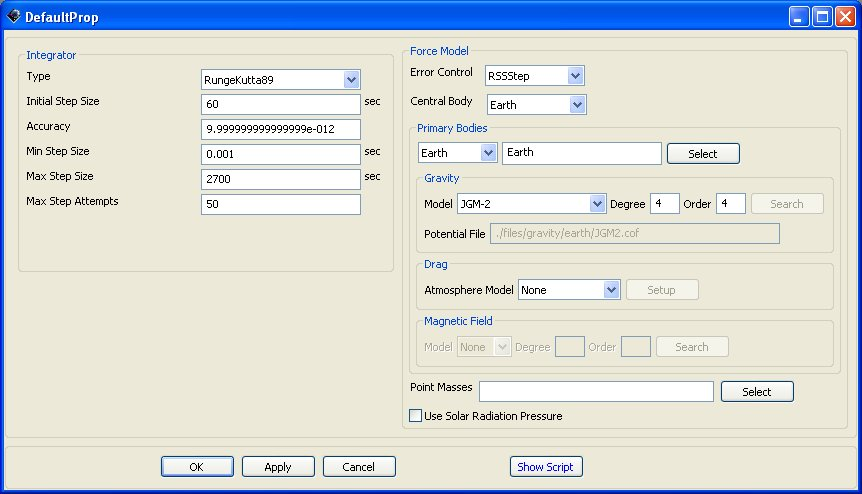 |
Figure: Default Name and Settings for the Propagator Object Dialog Box
Fields
Force Model Group Box Fields
ErrorControl | The ErrorControl field allows you to choose how a Propagator measures the error in an integration step. The algorithm selected in the ErrorControl field is used to determine the error in the current step, and this error is compared to the value set in the Accuracy field to determine if the step has an acceptable error or needs to be improved. All error measurements are relative error, however, the reference for the relative error changes depending upon the selection of ErrorControl. RSSStep is the Root Sum Square (RSS) relative error measured with respect to the current step. RSSState is the (RSS) relative error measured with respect to the current state. LargestStep is the state vector component with the largest relative error measured with respect to the current step. LargestState is the state vector component with the largest relative error measured with respect to the current state. For a more detailed discussion see the GMAT Mathematical Specification. Units: N/A.
| ||||||
CentralBody | The CentralBody field allows the user to select the origin for the propagation. All propagation occurs in the FK5 axes system, about the CentralBody chosen by the user. The CentralBody must be a gravitational body and so cannot be a LibrationPoint or other special point.
| ||||||
PrimaryBodies | The PrimaryBodies field is a list of all celestial bodies that are to be modelled with a force model more complex than point mass gravity. Lists are surrounded by curly braces. For each PrimaryBody, the user can choose a drag, magnetic field, and aspherical gravity model. There is a coupling between the PrimaryBodies filed and the PointMasses field. A primary body can be any planet or moon not included in the PointMasses field.
| ||||||
Gravity.PrimaryBody.PotentialFile | This field allows the user to define the source for the non-spherical gravity coefficients for a primary body. If a gravity file is located in the Primary Body's potential path as defined in the startup file, you only need to specify the model name and not the entire path. For example, if the JGM2 coefficients file is contained in the directory defined in the startup file by the line EARTH\_POT\_PATH, then you only need to specify the model name JGM2. If the model is not contained in the body's potential path, you must supply the entire path as well as the file name. If GMAT does not successfully find the file requested, it uses the default gravity model as defined in the startup file. From the GUI, only models for Earth appear if Earth is the active primary body. This is to avoid allowing the user to select a lunar potential model for the Earth. If the Other option is selected the user has the ability of selecting a gravity model file on their local computer.
| ||||||
Gravity.PrimaryBody.Degree | This field allows the user to select the the degree, or number of zonal terms, in the non-spherical gravity model. Ex. Gravity.Earth.Degree = 2 tells GMAT to use only the J2 zonal term for the Earth. The value for Degree must be less than the maximum degree specified by the Model.
| ||||||
Gravity.PrimaryBody.Order | This field allows the user to select the the order, or number of tesseral terms, in the non-spherical gravity model. Ex. Gravity.Earth.Order = 2 tells GMAT to use 2 tesseral terms. Note: Order must be greater than or equal to Degree.
| ||||||
Drag | The Drag field allows a user to specify a drag model. Currently, only one drag model can be chosen for a particular propagator and only Earth models are available.
| ||||||
Drag.AtmosphereModel | The Drag.AtmosphereModel field allows a user to specify a drag model. Currently, only one drag model can be chosen for a particular propagator and only Earth models are available.
| ||||||
Drag.F107 | The Drag.F107 field allows you to set the F10.7 solar flux value used in computing atmospheric density. F10.7 is the solar radiation at a wavelength of 10.7 cm.
| ||||||
Drag.F107A | The Drag.F107A field allows you to set the average F10.7 value. F10.7 is the average of F10.7 over one month.
| ||||||
Drag.MagneticIndex | The Drag.MagneticIndex index field allows you to set the kp value for use in atmospheric density calculations. kp is a planetary 3-hour-average, geomagnetic index that measures magnetic effects of solar radiation.
| ||||||
PointMasses | A PointMass is a planet or moon that is modelled by a point source located at its center of gravity. A PointMass body can be any planet or moon not included in the PrimaryBodies field.
| ||||||
SRP | The SRP field allows the user to include the force due to solar radiation pressure in the total sum of forces.
|
Integrator Group Box Fields
Type | The Type field is used to set the type of numerical integrator.
| ||||||
InitialStepSize | The InitialStepSize is the size of the first attempted step by the integrator. If the step defined by InitialStepSize does not satisfy Accuracy, the integrator adapts the step according an algorithm defined in the mathematical specifications document to find an acceptable first step that meets the user's requested.
| ||||||
Accuracy | The Accuracy field is used to set the desired accuracy for an integration step. When you set a value for Accuracy, GMAT uses the method selected in ErrorControl field on the Force Model, to determine a metric of the accuracy. For each step, the integrator ensures that the accuracy, as calculated using the method defined by ErrorControl, is less than the limit defined by Accuracy. If an integrator exceeds MaxStepAttempts trying to meet the requested accuracy, and error message is thrown and propagation stops.
| ||||||
MinStep | The MinStep field is used to set the minimum allowable step size.
| ||||||
MaxStep | The MaxStep field is used to set the maximum allowable step size.
| ||||||
MaxStepAttempts | The MaxStepAttempts field allows the user to set the number of attempts the integrator takes to meet the tolerance defined by Accuracy.
|
Fields Associated Only with Adams-Bashforth-Moulton Integrator
MinIntegrationerror | The MinIntegrationerror field is used by the ABM integrator (and other predictor-corrector integrators when implemented) as the desired integration error to be obtained when the step size is changed. Predictor-Corrector integrators adapt step size when the obtained integration error falls outside of the range of acceptable steps, as determined by the bounds set by the MinIntegrationerror and Accuracy fields. The integrator then applies an internal calculation to recompute the step size, attempting to hit the NomIntegrationerror, and restarts the integrator.
| ||||||
NomIntegrationerror | The NomIntegrationerror field is used by the ABM integrator (and other predictor-corrector integrators when implemented) as the desired integration error to be obtained when the step size is changed. Predictor-Corrector integrators adapt step size when the obtained integration error falls outside of the range of acceptable steps, as determined by the bounds set by the MinIntegrationerror and Accuracy fields. The integrator then applies an internal calculation to recompute the step size, attempting to hit the NomIntegrationerror, and restarts the integrator.
|
Interactions
A Propagator Requires Other Objects/Commands of Type: Force Model (Script Only). (Note: There are slight differences in how you configure a Propagator in the script and GUI and we refer you to the script example shown in the script section for details. Effort has been made to reduce any difference between the script and GUI.)
Examples
Create ForceModel DefaultProp_ForceModel;
GMAT DefaultProp_ForceModel.CentralBody = Earth;
GMAT DefaultProp_ForceModel.PrimaryBodies = {Earth};
GMAT DefaultProp_ForceModel.Drag = None;
GMAT DefaultProp_ForceModel.SRP = Off;
GMAT DefaultProp_ForceModel.ErrorControl = RSSStep;
GMAT DefaultProp_ForceModel.GravityField.Earth.Degree = 4;
GMAT DefaultProp_ForceModel.GravityField.Earth.Order = 4;
GMAT DefaultProp_ForceModel.GravityField.Earth.PotentialFile = 'JGM2.cof';
Create Propagator DefaultProp;
GMAT DefaultProp.FM = DefaultProp_ForceModel;
GMAT DefaultProp.Type = RungeKutta89;
GMAT DefaultProp.InitialStepSize = 60;
GMAT DefaultProp.Accuracy = 9.999999999999999e-012;
GMAT DefaultProp.MinStep = 0.001;
GMAT DefaultProp.MaxStep = 2700;
GMAT DefaultProp.MaxStepAttempts = 50;ReportFile
ReportFile — A ReportFile.
Synopsis
Create ReportFilenamename.field=value…
Description
The ReportFile is a file where values and qualities of objects can be stored so that they can be viewed at a later time.

Fields
FileName | The FileName field allows the user to define the file path and file name for a report.
| ||||||
Precision | The Precision field allows the user to set the precision of the variable written to a report.
| ||||||
Add | The \st{Add} field allows a userto add user-defined variables to a report file. To add multipleuser-defined variables, enclose the variables with curly brackets.Ex. MyReportName.Add ={Sat.X, Sat.Y, Var1, Array(1,1)}; TheGUI's Selected field is the equivalent of the script's Add field.In the event of no Add command or no objects in the Selected field, GMATshould run without the Report output and a warning message displayed in the message window. Thefollowing warning message is sufficient: Report plot will be turned off. No object has beenselected for reporting.
| ||||||
WriteReport | The WriteReport field specifies whether to write data tothe report FileName.
| ||||||
WriteHeaders | The WriteHeaders field specifies whether to includeheaders that describe the variables in a report.
| ||||||
LeftJustify | When the LeftJustify field is set to On, then the data isleft justified and appears at the left most side of the column. Ifthe LeftJustify field is set to Off, then the data iscentered in the column.
| ||||||
ZeroFill |
| ||||||
ColumnWidth | The ColumnWidth field is used to define the width of the datacolumns in a report file. The value for ColumnWidth is appliedto all columns of data. For example, if ColumnWidth is set to20, then each data column will be 20 white-spaces wide.
| ||||||
SolverIterations | The SolverIterations field determines whether or not data associated with perturbed trajectories during a solver (Targeter, Optimize) sequence is written to a report file. When SolverIterations is set to On, solver iterations are written to the report file. When SolverIterations is Off, the solver iterations are not written to the report file.
|
Interactions
Report Command | Located in the mission tree and will retrieve values at that particular time and insert them at the bottom of the report file. |
Examples
Create ReportFile ReportFile1;
GMAT ReportFile1.SolverIterations = Current;
GMAT ReportFile1.Filename = 'ReportFile1.txt';
GMAT ReportFile1.Precision = 16;
GMAT ReportFile1.Add = {DefaultSC.A1ModJulian, DefaultSC.EarthMJ2000Eq.X};
GMAT ReportFile1.WriteHeaders = On;
GMAT ReportFile1.LeftJustify = On;
GMAT ReportFile1.ZeroFill = Off;
GMAT ReportFile1.ColumnWidth = 20;SolarSystem
Solar System — A solar system.
Synopsis
Create SolarSystemnamename.field=value…
Description
This folder, found if the Solar System folder itself is double-clicked, enables the user to determine where he gets his data on the movements of planets, how often it updates, and how accurate the data is.
Fields
EphemerisSource | The EphemerisSourcefield allows the user to select the source used for planetaryephemerides. The source is used globally whenever planetaryephemeris information is required.
| ||||||
Ephemeris UpdateInterval | The EphemerisUpdateInterval is used to set howoften planetary positions are updated when calculating accelerationsduring propagation. For low-Earth orbits,EphemerisUpdateInterval can be set to around 60 for fasternumerical integration with little effect on the accuracy of thepropagation. For deep space propagation,EphemerisUpdateInterval should be set to zero.
| ||||||
UseTTForEphemeris | GMAT uses time in the TDB system as thedefault time system in the JPL ephemeris files. However, often itis possible to use time in the TT time system, without significantdifference in propagation accuracy. (TT and TDB are within 1millisecond of each other). The advantage to using TT is that itavoids the transformation from TT to TDB and therefore orbitpropagation will execute faster. The UseTTForEphemeris fieldallows the user to choose between the default of TDB in theephemeris files (UseTTForEphemeris=false), or TT in theephemeris files (UseTTForEphemeris = true).
| ||||||
EphemerisFile | The EphemerisFile field allows the user to specify the locationand name of the file for each type of ephemeris GMAT supports. Forexample, if Ephemeris is set to DE405, you can set thepath for a DE405 file using SolarSystem.EphemerisFile =c:/MyPath/MyDE405.file.
| ||||||
AnalyticModel |
|
Interactions
CelestialBodies, BaryCenter, and Libration Point | The position and data on all these depend on the source of the Solar System data and how often it is updated. |
Propagator | How often the position of the planetary bodies are updated will have an impact on how a spacecraft will propagate. |
Spacecraft | A number of parameters of a spacecraft are based off the position of the planets |
Spacecraft
Spacecraft — A spacecraft
Synopsis
Create Spacecraftnamename.field=value…
Description
A Spacecraft resource contains information about the spacecraft's orbit, its attitude, its physical parameters (such as mass and drag coefficient), and any attached hardware, including thrusters and fuel tanks. It also contains information about the visual model used to represent it in an OrbitView.
Fields
Epoch
| The entry format and time system of the Epoch field. CautionThe definition of the modified Julian date is not the same as other software. Most software uses the Smithsonian Astrophysical Observatory definition of 1957, where JD is the full Julian date: MJD = JD - 2400000.5 GMAT, however, uses the following definition: MJD = JD - 2430000.0
| ||||||||||||||||||
| The initial epoch of the spacecraft's state and properties.
|
Orbit
| The Coordinate System field allows the user to choose which coordinate system with which to define the orbit state vector. The Coordinate System field has a dependency upon the State Type field. If the coordinate system chosen by the user does not have a gravitational body at the origin, then the state types Keplerian, ModifiedKeplerian, and Equinoctial are not permitted. This is because these state types require a µ value.
| ||||
| The State Type field allows the user to configure the type of state vector that they wish to use. The State Type field has a dependency upon the Coordinate System field. If the coordinate system chosen by the user does not have a gravitational body at the origin, then the state types Keplerian, ModifiedKeplerian, and Equinoctial are not permitted. This is because these state types require a µ value.
|
Cartesian State
| X is the x-component of the Spacecraft state in the coordinate system chosen in the Spacecraft Coordinate System field.
| ||||||||
| Y is the y-component of the Spacecraft state in the coordinate system chosen in the Spacecraft Coordinate System field.
| ||||||||
| Z is the z-component of the Spacecraft state in the coordinate system chosen in the Spacecraft Coordinate System field.
| ||||||||
| VX is the x-component of the Spacecraft velocity in the coordinate system chosen in the Spacecraft Coordinate System field.
| ||||||||
| VY is the y-component of the Spacecraft velocity in the coordinate system chosen in the Spacecraft Coordinate System field.
| ||||||||
| VZ is the z-component of the Spacecraft velocity in the coordinate system chosen in the Spacecraft Coordinate System field.
|
Keplerian State
| The SMA field is the spacecraft orbit's osculating Keplerian semimajor axis in the coordinate system chosen in the Spacecraft Coordinate System field. SMA must be strictly greater than 1 m or less than -1 m to avoid numerical issues in the conversions to other state types. For circular and elliptical orbits ( 0 <= ECC < 0.9999999 ) SMA should only be greater than 1 m and for hyperbolic orbits (ECC > 1.0000001) SMA should be less than -1 m. GMAT does not support the creation of parabolic orbits.
| ||||||||
| The ECC field is the spacecraft orbit's osculating eccentricity. For circular or elliptic orbits, ECC must be greater than or equal to 0.0, and less than or equal to 0.9999999 to avoid numerical issues in the conversion to other state types as the Keplerian elements are undefined for parabolic orbits. For hyperbolic orbits ECC must be greater than or equal to 1.0000001. See also the SMA description.
| ||||||||
| The INC field is the spacecraft orbit's osculating inclination, in degrees, with respect to the selected coordinate system.
| ||||||||
| The RAAN field is the spacecraft orbit's osculating right ascension of the ascending node, in degrees, with respect to the selected coordinate system.
| ||||||||
| The AOP field is the spacecraft orbit's osculating argument of periapsis, in degrees, with respect to the selected coordinate system.
| ||||||||
| The TA field is the spacecraft orbit's osculating true anomaly.
|
ModifiedKeplerian State
| The RadPer field is the spacecraft orbit's osculating radius of periapsis. RadPer must be greater than zero.
| ||||||||
| The RadApo field is the spacecraft orbit's osculating radius of apoapsis. RadApo must be strictly greater than or less than zero. When RadApo is negative, the orbit is hyperbolic.
| ||||||||
| See the the section called “Keplerian State” section for a description of this field. | ||||||||
| See the the section called “Keplerian State” section for a description of this field. | ||||||||
| See the the section called “Keplerian State” section for a description of this field. | ||||||||
| See the the section called “Keplerian State” section for a description of this field. |
SphericalAZFPA State
| The RMAG field allows the user to set the magnitude of the spacecraft's position vector.
| ||||||||
| The RA field allows the user to set the spacecraft's right ascension.
| ||||||||
| The DEC field allows the user to set the spacecraft's declination.
| ||||||||
| The VMAG field allows the user to set the magnitude of the spacecraft's velocity.
| ||||||||
| The AZI field allows the user to set the spacecraft's azimuth angle.
| ||||||||
| The FPA allows the user to set a spacecraft's flight path angle.
|
SQP
SQP(fmincon) — A SQP(fmincon).
Synopsis
Create FminconOptimizernamename.field=value…
Description
fmincon is an Nonlinear Programming solver provided in MATLAB's Optimization Toolbox. fmincon performs nonlinear constrained optimization and supports linear and nonlinear constraints. This optimizer is only available to users who have both MATLAB and MATLAB's Optimization toolbox.
GMAT contains an interface to the fmincon optimizer and it appear as if fmincon is a built in optimizer in GMAT. Field names for this object have been copied from those used in MATLABS optimset function for consistency with MATLAB as opposed to other solvers in GMAT.

Fields
DiffMax Change | The DiffMaxChange parameter is the upper limit on the perturbation used in MATLAB's finite differencing algorithm. For fmincon, you don't specify a single perturbation value, but rather give MATLAB a range, and it uses an adaptive algorithm that attempts to find the optimal perturbation.
| ||||||
DiffMin Change | The DiffMinChange parameter is the lower limit on the perturbation used in MATLAB's finite differencing algorithm. For fmincon, you don't specify a single perturbation value, but rather give MATLAB a range, and it uses an adaptive algorithm that attempts to find the optimal perturbatin.
| ||||||
MaxFunEvals | The MaxFunEvals parameter allows the user to set the maximum number of cost function evaluations in an attempt to find an optimal solution. This is equivalent to setting the maximum number of passes through an optimization loop in a GMAT script. If a solution is not found before the maximum function evaluations, fmincon outputs an ExitFlag of zero, and GMAT continues.
| ||||||
MaxIter | The MaxIter parameter allows the user to set the maximum allowable number of optimizer iterations. Depending upon the nature of the problem, and whether gradients are provided, it may take many function evaluations for each optimizer iteration. The MaxIter parameter allows the user to control the maximum function evaluations, and maximum iterations independently.
| ||||||
TolX | The TolX parameter is the termination toler-ance on the vector of independent variables, and is used only if the user sets a value.
| ||||||
TolFun | The TolFun parameter is the convergence tolerance on the cost function value.
| ||||||
TolCon | The TolCon parameter is the convergence tolerance on the constraint functions.
| ||||||
ShowProgress | The ShowProgress field determines whether data pertaining to iterations of the solver is displayed in the message window. When ShowProgress is true, the amount of information contained in the message window is controlled by the ReportSytle field.
| ||||||
ReportStyle | The ReportStyel field determines the amount and type of data written to the message window for each iteration of the solver (When ShowProgress is true). ADD DESCRIPTIONS OF CONCISE,VERBOSE, ADN NORMAL. I CAN'T RUN THE OPTIMIZER RIGHT NOW SO I CAN'T TELL WHAT EACH SETTING DOES.
| ||||||
ReportFile | The ReportFile field contains the path and file name of the report file.
|
Examples
Create FminconOptimizer SQP1;
GMAT SQP1.MaxIter = 25;
GMAT SQP1.MaxFunEvals = 250;
GMAT SQP1.TolX = 1e-5;
GMAT SQP1.TolFun = 1e-5;
GMAT SQP1.TolCon = 1e-5;
GMAT SQP1.DiffMaxChange = 1e-4;
GMAT SQP1.DiffMinChange = 1e-7;
GMAT SQP1.ShowProgress = true;
GMAT SQP1.ReportStyle = 'Verbose';
GMAT SQP1.ReportFile = '\output\OptimizerProgress.txt';String
String — A string.
Synopsis
Create Stringnamename.field=value…
Description
This page will show you how to create and use String objects. Stings are useful for storing characters as a set. One possible use of them is to report back a specific message at a set point in the mission sequence.
Thruster
Thruster — A thruster.
Synopsis
Create Thrusternamename.field=value…
Description
The Thruster uses the fuel tank and directs the thrust of the rocket engine while in space. It is used for finite burns.
Fields
CoordinateSystem | The CoordinateSystem field for a thrusterdetermines what coordinate system the orientation parametersX_Direction, Y_Direction, and Z_Direction arereferenced to. This is a temporary fix in GMAT. Eventually, theuser will specify the attitude of aspacecraft, and then X_Direction, Y_Direction, and Z_Direction will be referenced to the spacecraft body frame.
| ||||||||
Axis | The Axis field allows the user to define a localcoordinate system for a thruster. Note that there is a couplingbetween the Axis parameter and the CoordinateSystemparameter for a thruster. Only one of the two canbe specified.
| ||||||||
Origin | The Origin fieldallows the user to define a local origin for a thruster. Note thatthere is a coupling between the Origin parameter and theCoordinateSystem parameter for a thruster. Only one of the twocan be specified.
| ||||||||
X_Direction | X_Direction, divided by the RSS of the three directioncomponents, forms the x direction of the spacecraft thrust vector direction.
| ||||||||
Y_Direction | Y_Direction, divided by the RSS of the three directioncomponents, forms the y direction of the spacecraft thrust vector direction.
| ||||||||
Z_Direction | Z_Direction, divided by the RSS of the three directioncomponents, forms the z direction of the spacecraft thrust vector direction.
| ||||||||
ThrustScaleFactor | ThrustScaleFactor is a scale factor that is multiplied by the thrust vector for a given thruster, before the thrust vector is added into the total accleration.
| ||||||||
Tank | The Tank field specifies which tank the thruster draws propellant from. The constants Ci below are used in the following equation to calculate thrust FT as a function of pressure P and temperature T
| ||||||||
C1 | Thrust coefficient.
| ||||||||
C2 | Thrust coefficient.
| ||||||||
C3 | Thrust coefficient.
| ||||||||
C4 | Thrust coefficient.
| ||||||||
C5 | Thrust coefficient.
| ||||||||
C6 | Thrust coefficient.
| ||||||||
C7 | Thrust coefficient.
| ||||||||
C8 | Thrust coefficient.
| ||||||||
C9 | Thrust coefficient.
| ||||||||
C10 | Thrust coefficient.
| ||||||||
C11 | Thrust coefficient.
| ||||||||
C12 | Thrust coefficient.
| ||||||||
C13 | Thrust coefficient.
| ||||||||
C14 | Thrust coefficient.
| ||||||||
K1 | Isp coefficient.
| ||||||||
K2 | Isp coefficient.
| ||||||||
K3 | Isp coefficient.
| ||||||||
K4 | Isp coefficient.
| ||||||||
K5 | Isp coefficient.
| ||||||||
K6 | Isp coefficient.
| ||||||||
K7 | Isp coefficient.
| ||||||||
K8 | Isp coefficient.
| ||||||||
K9 | Isp coefficient.
| ||||||||
K10 | Isp coefficient.
| ||||||||
K11 | Isp coefficient.
| ||||||||
K12 | Isp coefficient.
| ||||||||
K13 | Isp coefficient.
| ||||||||
K14 | Isp coefficient.
|
Interactions
BeginFiniteBurn/EndFiniteBurn | These commands use the tank and the thruster to start a finite burn, where the delta V is not instantaneous. |
Fuel Tank | This object contains the fuel used to power the thruster and subsequently the finite burn. |
FiniteBurn | This takes the parameters of the tank and the thruster and apply it to a coordinate system, with a scaling method available if wanted. |
Spacecraft | This is the object that the burn is applied to. |
Script Examples
Create Thruster Thruster1;
GMAT Thruster1.Element1 = 1;
GMAT Thruster1.Element2 = 0;
GMAT Thruster1.Element3 = 0;
GMAT Thruster1.C1 = 500;
GMAT Thruster1.C2 = 0;
GMAT Thruster1.C3 = 0;
GMAT Thruster1.C4 = 0;
GMAT Thruster1.C5 = 0;
GMAT Thruster1.C6 = 0;
GMAT Thruster1.C7 = 0;
GMAT Thruster1.C8 = 0;
GMAT Thruster1.C9 = 0;
GMAT Thruster1.C10 = 0;
GMAT Thruster1.C11 = 1;
GMAT Thruster1.C12 = 0;
GMAT Thruster1.C13 = 0;
GMAT Thruster1.C14 = 0;
GMAT Thruster1.K1 = 2150;
GMAT Thruster1.K2 = 0;
GMAT Thruster1.K3 = 0;
GMAT Thruster1.K4 = 0;
GMAT Thruster1.K5 = 0;
GMAT Thruster1.K6 = 0;
GMAT Thruster1.K7 = 0;
GMAT Thruster1.K8 = 0;
GMAT Thruster1.K9 = 0;
GMAT Thruster1.K10 = 0;
GMAT Thruster1.K11 = 1;
GMAT Thruster1.K12 = 0;
GMAT Thruster1.K13 = 0;
GMAT Thruster1.K14 = 0;
GMAT Thruster1.CoordinateSystem = 'MJ2000EarthEquator';
GMAT Thruster1.ThrustScaleFactor = 1;Variable
Variable — A variable.
Synopsis
Create Variablenamename=value…
Description
The Variable object allows you to create and name a variable and assign to it a real number value. A variable can be used in numerous commands which allows you to customize the mission sequence to your application. In the simplest case, a variable can be defined by a simple assignment to a numeric literal. In more complex cases, a variable can be defined using an assignment that contains a complicated mathematical expression.

VF13adOptimizer
VF13adOptimizer — Under Construction.
Synopsis
Under Construction. …
XYPlot
XY Plot — A XY Plot.
Synopsis
Create XYPlotnamename.field=value…
Description
The XY Plot is a graph under the Plots/Reports folder in the resource tree that plots data onto the X and Y axes of the graph. Any two parameters can be chosen to plot from the Parameter Select dialog box when the View radio button is clicked. The plot has the capability to be turned on and/or off throughout the mission if desirable.
Interactions
Spacecraft | Spacecraft interact with an XY Plot throughout the entire mission. The data retrieved from the spacecraft, as it carries out the command, is what gets plotted onto the graph. |
Toggle Command | A Toggle can be inserted into the mission sequence to control when the XY Plot is to plot data by subscribing it to the Toggle list. If it is necessary to only plot data at a certain point during the mission, besides at the beginning or end points, then two Toggle commands can be added to switch it on and off. |
Fields
IndVar | The IndVar field allows the user to define the independent variable for an xy-plot. Only one variable can be defined as an independent variable. For example, the line MyXYPlot.IndVar = DefaultSC.A1ModJulian sets the independent variable to be the epoch of DefaultSC in the A1 time system and modified Julian format.
| ||||||
Add | The Add field allows the user to add dependent variables to an xy-plot. All dependent variables are plotted on the y-axisvs the independent variable defined by IndVar. To define multiple dependent variables, they should be included in curly braces. For example, MyXYPlot.Add = DefaultSC.EarthMJ2000Eq.Y , DefaultSC.EarthMJ2000Eq.Z. The GUI's Selected field is the equivalent of the script's Add field. In the event of no Add command or no objects in the Selected field, GMAT should run without the XYPlot and a warning message displayed in the message window. The following warning message is sufficient: XYPlot will be turned off. No object has been selected for plotting.
| ||||||
Grid | When the Grid field is set to On, then a grid is drawn on an xy-plot. When the Grid field is set to Off, then a grid is not drawn.
| ||||||
SolverIterations | The SolverIterations field determines whether or not perturbed trajectories are plotted during a solver (Targeter, Optimize) sequence. When SolverIterations is set to On, solver iterations are shown on the plot. When SolverIterations is set to Off, solver iterations are not shown on the plot.
| ||||||
ShowPlot | The ShowPlot field allows the user to turn off a plot for a particular run, without deleting the plot object, or removing it from the script. If you select true, then the plot will be shown. If you select false, then the plot will not be shown.
|
Table of Contents
- Achieve — Perform an achieve command
- BeginFiniteBurn — Perform a begin finite burn
- BeginMissionSequence — Under construction.
- CallFunction — Perform a call function
- Else — Perform an else statement
- EndFiniteBurn — Under construction.
- Equation — Perform an equation command
- For — Perform a for loop
- If — Perform an if command
- Maneuver — Perform a maneuver command
- Minimize — Perform a minimize command
- NonLinearConstraint — Apply nonlinear constraint
- Optimize — Perform an optimize command
- PenUp — Under construction.
- PenDown — Under construction.
- Propagate — Perform a propagate command
- Report — Output a report
- Save — Under construction.
- ScriptEvent — Perform a ScriptEvent command
- Stop — Perform a stop command
- Target — Perform a targeting sequence
- Toggle — Perform a toggle command
- Vary — Perform a vary command
- While — Run a while loop
Achieve
Achieve — Perform an achieve command
Synopsis
Description
The purpose of the Achieve command is to define a goal for the spacecraft to reach at some point in its trajectory. The goal must have a corresponding value and tolerance so the differential corrector can solve for the best solution during the spacecraft's flight. To define a goal, a property must be chosen out of the Parameter Select dialog box along with the correct components in the other fields. The command can only be appended within a targeting sequence and must be accompanied and preceeded by a Vary, Maneuver, and Propagate command.
Options
Goal | The option allows the user to select any single element user defined parameter, except a number, to Achieve.
| ||||||
Arg1 | The Arg1 option is the desired value for after the solver has converged.
| ||||||
Tolerance | The Tolerance option sets Arg2. Arg2 is the convergence tolerance for Arg1.
| ||||||
SolverName | The SolverName option allows the user to choose which solver to assign to the Achieve command.
|
BeginFiniteBurn
BeginFiniteBurn — Perform a begin finite burn
Synopsis
Description
The Begin Finite Burn and End Finite Burn commands are very simple. When the Begin Finite Burn command is entered into the mission sequence it will initiate the thrusters of the spacecraft until the End Finite Burn command is reached. After the finite burn is turned off, the spacecraft's thrusters will shut down.
Options
ManeuverName | The ManeuverName option allows the user to choose between any previously created finite burn. As an example, to maneuver DefaultSC using DefaultFB, the script linewould appear as Manevuer DefaultFB(DefaultSC).
| ||||||
SpacecraftName | The SpacecraftName option allows the user to select which spacecraft to maneuver using the maneuver selected in the ManeuverName option.
|
CallFunction
Call Function — Perform a call function
Synopsis
Definition
GMAT functions are very useful and work nearly the same as they do in most programming languages. They may be invoked using the Call Function command covered here.
Options
OutputList | The OutputList option allows the user to set the output of Function to a user defined parameter.
| ||||||
InputList | The InputList option allows the user to set the input of Function to a user defined parameter.
| ||||||
Function | The Function option allows the user to set the function that will be called in a specific location of the mission sequence. The function has to be defined before it can be used in the CallFunction Command.
|
Else
Else — Perform an else statement
Synopsis
Description
If-Else statements in GMAT work as they do in other programming languages, especially Matlab. The Else command adds another dimension to an If statement. You use an Else statement when you want something to happen when the conditions of an If statement are not met. For example, an If statement who's condition is "x < 5" will only execute the script within its scope when x is indeed less than 5. GMAT would otherwise pass over the If statement's associated script and continue. However, having an Else statement after the If will ensure that the lines of script within the scope of that Else are executed when x is equal to 5 or greater.
Equation
Equation — Perform an equation command
Synopsis
Description
The Equation command uses the Equation to make one variable equal to some combination of previously defined variables and values. It is highly useful for storing values so that they aren't lost. Additionally, it is very useful for advanced commands.
Options
Arg1 | The Arg1 option allows the user to set Arg1 to Arg2.
| ||||||
Arg2 | The Arg2 option allows the user to define Arg1.
|
For
For — Perform a for loop
Synopsis
Description
The for loop is a control flow statement that allows portions of code to be executed iteratively using an explicit loop variable (Wikipedia). GMAT for loops are three-expression loops that allow the user to set the initial value of the loop variable, its increment, and the test to exit the loop. A parameter must be defined explicitly using a Create Variable statement or GUI equivalent before it can be used in a for loop command statement. The parameters used to define Start, Increment, and End can be any of the following GMAT parameters: numeric literal (real number), variable, array element, object property.
Interfaces
The GUI for the For Loop command is divided into four sections.
The first section, the index, is where the counter variable name is displayed.
The second section, the start, is the number with which the counter variable is first stored with.
The third section, the increment, is the value that the counter variable will change by each time the program goes through the loop.
The fourth section, the end, is the value of the counter variable when the loop is exited.
 |
Figure: Default Name and Settings for the For Loop command Dialog Box
Options
Variable | The Variable field allows the user to define the variable that to be incremented during the loop process.
| ||||||
Start | The Start option allows the user to set the starting value of the For Loop.
| ||||||
Increment | The Increment option allows the user to set the increment value of the For Loop. When the increment value is not included in a for loop statement, the default value is used.
| ||||||
End | The End option allows the user to set the ending value of the For Loop.
|
For Loop Behavior
When the Increment option is left out of the script syntax the default value is used. If an Increment value of 0 is used, the For Loop should not execute but GMAT should continue to run. If End>Start and Increment<0, then the For Loop should not execute. If Start>End and Increment>0, then the For Loop should not execute. End can be equal to Start, but the For Loop will not execute.
If
If — Perform an if command
Synopsis
Description
The If command gives you the ability to use a logical statement within GMAT. At some point during a mission sequence, when a particular command should only be executed when a certain condition is met, use of the If command is recommended. The If command also gives you the ability to make a command's execution reliant upon multiple conditions.
Options
<If Command> | Arg1 and Arg2 can be any of the following: Real Number, Array element, Variable, Spacecraft Parameter or any other user defined parameter.
| ||||||
<Statements> |
| ||||||
| | The | option allows the user to set an OR operator in between <logical expression>s.
| ||||||
& | The & option allows the user to set an AND operator in between <logical expression>s
|
Examples
Using the If command in the script is quite simple. If you have ever programmed before in the higher level languages such as C, Matlab, or Java, GMAT will be very familiar. The statement reads like you see it basically: If the given statement after the 'If' is true, then execute the statement(s) following until the 'EndIf' is reached.
Maneuver
Maneuver — Perform a maneuver command
Synopsis
Description
The Maneuver command is placed in the mission tree and applies a selected impulsive burn to a selected spacecraft. A finite burn requires something else to be applied.
Options
BurnName | The BurnName field allows the user to choose between any previously created impulsive burn. As an example, to maneuver DefaultSC using DefaultIB, the script line would appear as Manevuer DefaultIB(DefaultSC).
| ||||||
SpacecraftName | The SpacecraftName field allows the user to select which spacecraft to maneuver using the maneuver selected in the BurnName field.
|
Minimize
Minimize — Perform a minimize command
Synopsis
Description
The minimize command in GMAT allows variables to minimize by using a defined optimizer in optimize sequence.
Options
OptimizerName | The OptimizerName option allows the user to specify which solver to use to minimize the cost function.
| ||||||
Arg | The Arg field allows the user to specify the function to be minimized upon convergence of the solver given by OptimizerName. Arg can be any of the following: Variable, Array element, or Spacecraft Parameter or any other 1x1 numeric user defined parameter.
|
NonLinearConstraint
NonLinearConstraint — Apply nonlinear constraint
Synopsis
Description
The nonlinear constraints in GMAT allows spacecraft properties, variable or array to apply constraint values, and also NonLinearConstraint can be created in optimize sequences. By using the fmincon optimizer, users can give various nonlinear constraints.
Options
OptimizeName | The OptimizerName option allows the user to specify which solver to use in satisfying nonlinear constraints.
| ||||||
{logical expression} | The logical expression field allows the user to specify the constraint to be satisfied upon convergence of the solver given by OptimizerName. Arg1 and Arg2 can be any of the following: Real Number, a 1-D Array (column vector),Array element, Variable, Spacecraft Parameter or any other numeric user defined parameter. If Arg1 is a 1-D Array, then Arg2 must be a 1-D Array with the same dimensions and vice-versa.
|
Examples
Script Examples
% Constrain the SMA of Sat to be 7000 km, using fminconSQP
NonLinearConstraint fminconSQP( Sat.SMA = 7000 );
% Constrain the SMA of Sat to be less than or equal to 7000 km, using fminconSQP
NonLinearConstraint fminconSQP( Sat.SMA <= 7000 );
% Constrain the SMA of Sat to be greater than or equal to 7000 km, using fminconSQP
NonLinearConstraint fminconSQP( Sat.SMA >= 7000a );Optimize
Optimize — Perform an optimize command
Synopsis
Description
The optimize command in GMAT allows variables to optimize by using a solver fmincon object.
Options
SolverName | The SolverName field allows the user to choose between any previously created optimizer for use in an optimization sequence. For example, to begin a optimization sequence using DefaultSQP, the script is Optimize DefaultSQP.
| ||||||
<Statements> |
|
Propagate
Propagate — Perform a propagate command
Synopsis
Description
The Propagate Command is a very important one and will be covered in this section. Basically, Propagate will take the given spacecraft and, using the Propagat''or'' specified as its guide, make it travel until the given condition is met whether it be a location or something else such as elapsed time.
Reference Table
BackProp | The BackProp option allows the user to set the flag to enable or disable backwards propagation for all spacecraft in the SatListN option. The Backward Propagation GUI check box field stores all the data in BackProp. A check indicates backward propagation is enabled and no check indicates forward propagation. In the script, BackProp can be the word Backwards for backward propagation or blank for forward propagation.
| ||||||
Mode | The Mode option allows the user to set the propagation mode for the propagator that will affect all of the spacecraft added to the SatListN option. For example, if synchronized is selected, all spacecraft are propagated at the same step size. The Propagate Mode GUI field stores all the data in Mode. In the script, Mode is left blank for the None option and the text of the other options available is used for their respective modes.
| ||||||
PropagatorName | The PropagatorName option allows the user to select a user defined propagator to use in spacecraft and/or formation propagation. The Propagator GUI field stores all the data in PropagatorName.
| ||||||
SatListN | The SatListN option allows the user to enter all the satellites and/or formations they want to propagate using the PropagatorName propagator settings. The Spacecraft List GUI field stores all the data in SatListN.
| ||||||
StopCondListN / Parameter | The StopCondListN option allows the user to enter all the parameters used for the propagator stopping condition. See the StopCondListN/Condition Option/Field for additional details to the StopCondListN option.
| ||||||
StopCondListN / Condition | The StopCondListN option allows the user to enter the propagator stopping condition's value for the StopCondListN Parameter field.
|
Examples
Script Syntax
Propagate Mode BackProp PropagatorName(SatList1,fStopCondList1g) ...
BackPropPropagatorName (SatListN, {StopCondList})Script Examples
% Single spacecraft propagation with one stopping condition
% Syntax #1
Propagate DefaultProp(DefaultSC, {DefaultSC.ElapsedSecs = 8640.0});
% Single spacecraft propagation with one stopping condition
% Syntax #2
Propagate DefaultProp(DefaultSC) {DefaultSC.ElapsedSecs = 8640.0};
% Single spacecraft propagation by one integration step
Propagate DefaultProp(DefaultSC);
% Multiple spacecraft propagation by one integration step
Propagate DefaultProp(Sat1, Sat2, Sat3);
% Single formation propagation by one integration step
Propagate DefaultProp(DefaultFormation);
% Single spacecraft backwards propagation by one integration step
Propagate Backwards DefaultProp(DefaultSC);
% Two spacecraft synchronized propagation with one stopping condition
Propagate Synchronized DefaultProp(Sat1, Sat2, {DefaultSC.ElapsedSecs = 8640.0});
% Multiple spacecraft propagation with multiple stopping conditions and propagation settings
% Syntax #1
Propagate Prop1(Sat1,Sat2, {Sat1.ElapsedSecs = 8640.0, Sat2.MA = 90}) ...
Prop2(Sat3, {Sat3.TA = 0.0});
% Multiple spacecraft propagation with multiple stopping conditions and propagation settings
% Syntax #2
Propagate Prop1(Sat1,Sat2) {Sat1.ElapsedSecs = 8640.0, Sat2.MA = 90} ...
Prop2(Sat3), {Sat3.TA = 0.0};Report
Report — Output a report
Synopsis
Description
The report command allows the user find parameters of the orbit and the spacecraft at particular moments in time. This command is inserted into the mission tree at various locations in the mission tree. The parameters found by this command are placed into a report file that can be accessed at a later time.
Options
ReportName | The ReportName option allows the user to specift the ReportFile for data output.
| ||||||
DataList | The DataList option allows the user to output data to the Filename specified by the ReportName. Multiple objects can be in the DataList when they are separated by spaces.
|
ScriptEvent
ScriptEvent — Perform a ScriptEvent command
Synopsis
Overview
The ScriptEvent command allows a user to enter in script within the GUI in the mission sequence. This can be useful in a number of ways if its easier to enter the script than to use the GUI interface. Also, if multiple things needed to be changed rapidly, this could be useful. Additionally, the ScriptEvent allows a user to have more freedom if the GUI is problematic and won't allow the user to perform the desired operation.
Stop
Stop — Perform a stop command
Synopsis
Target
Target — Perform a targeting sequence
Synopsis
TargetSolverName(options) VarySolverName(Vary arguments); AchieveSolverName(Achieve arguments); [Other Commands;] … EndTarget
Description
When building a mission, the targeting sequence is one of the most useful tools you have at your disposal. It allows you to use the power of a differential corrector to find solutions to complex two and three-body problems with a limited number of known values and several variables. Target is the base command that is appended with more commands such as Vary, Maneuver, Propagate, and Achieve in order to meet your goals. This makes it the first part of the sequence to be put into the Mission tree.
Arguments
SolverName | The SolverName option allows the user to choose between any previously created differential correctors for use in a targeting sequence. For example, to begin a targeting sequence using DefaultDC, the script is Target DefaultDC.
|
Options
SolveMode | Tells the targeter state machine how to manage the targeter loop. When running in the RunInitialGuess mode, the target loop is executed one time using the initial values of the targeter variables. No targeting is performed. When running in Solve mode, the targeter searches for a solution satisfying the targeter goals.
| ||||
ExitMode | Tells the Mission Control Sequence how to proceed after the targeter loop has finished running. When running in DiscardAndContinue mode, subsequent calls to the same targeter loop will reset the variables to their initial values. If running in SaveAndContinue mode, the targeter variables used on a subsequent run start with the values obtained the last time the targeter loop was run. In Stop mode, the mission run halts when the targeter loop completes its work.
|
Toggle
Toggle — Perform a toggle command
Synopsis
Description
The Toggle command is useful in turning on/off certain plots so that they do not become unintelligible. They are particularly useful if a mission requires multiple sequences to fine-tune the answer. If this is the case, it might be better to turn off a plot until the final or second-to-last sequence so that the rougher sequences don't obstruct the view of what is going on in the finesse sequences.
Options
OutputNames | The Toggle option allows the user to assign the Plot/Report(s) to be toggled. When more than one Plot/Report is being toggled they need to be separated by a space.
| ||||||
Arg | The Arg option allows the user to turn off or on the data output to a Plot/Report.
|
Exmaples
Script Examples
% Turn off Report file for the first day of propagation
Toggle ReportFile1 Off
Propagate DefaultProp(DefaultSC, {DefaultSC.ElapsedDays = 1});
Toggle ReportFile1 On
Propagate DefaultProp(DefaultSC, {DefaultSC.ElapsedDays = 1});
% Turn off XYPlot and Report file for the first day of propagation
Toggle XYPlot1 ReportFile1 Off
Propagate DefaultProp(DefaultSC, {DefaultSC.ElapsedDays = 1});
Toggle XYPlot1 ReportFile1 On
Propagate DefaultProp(DefaultSC, {DefaultSC.ElapsedDays = 1})Vary
Vary — Perform a vary command
Synopsis
Description
The Vary command is used in conjunction with the Target and Optimize Commands. The Vary command varies a particular parameter within the Target and Optimize Commands until certain conditions are met. It is a highly useful command for creating missions. Multiple Vary commands can be used within the same targeting or optimizing sequence.
Options
Parameters Associated with All Solvers
SolverName | The SolverName option allows the user to choose which solver to assign to the vary command.
| ||||||
Variable | The Variable option allows the user to select any single element user defined parameter, except a number, to vary. For example, DefaultIB.V, DefaultIB.N, DefaultIB.Element1, DefaultSC.TA, Array(1,1), and Variable are all valid values. The three element burn vector or multidimensional Arrays are not valid values.
| ||||||
InitialGuess | The InitialGuess option allows the user to set the initial guess for the selected Variable.
| ||||||
Lower | The Lower option allows the user to set Arg3 to the lower bound of the quantity being varied.
| ||||||
Upper | The Upper option allows the user to set Arg4 to the upper bound of the quantity being varied.
|
Parameters Associated with Differential Corrector
Perturbation | The Perturbation option is set by specifying a value for Arg1. The value of Arg1 is the perturbation size in calculating the finite difference derivative.
| ||||||
MaxStep | The MaxStep option is set by specifying a value for Arg2. The value of Arg2 limits the size of the step taken during an interaction of the differential corrector.
|
Parameters Associated with fmincon Optimizer
Additive Scale Factor | The AdditiveScaleFactor Field is used to nondimensionalize the independent variable. fmincon sees only the nondimensional form of the variable. The nondimensionalization is performed using the following equation: xn = (xd - a)/m . (xn is the non-dimensional parameter. xd is the dimensional parameter. a= additive scale factor. m= multiplicative scale factor.)
| ||||||
Multiplicative Scale Factor | The MultiplicativeScaleFactor Field is used to nondimensionalize the independent variable. fmincon sees only the nondimensional form of the variable. The nondimensionalization is performed using the following equation: xn = (xd - a)/m . (xn is the non-dimensional parameter. xd is the dimensional parameter. a= additive scale factor. m= multiplicative scale factor.)
|
While
While — Run a while loop
Synopsis
Description
The while loop is a control logic function that allows GMAT to check the spacecraft's status on a given parameter while performing a command or another control logic function within the mission sequence. When a spacecraft has reached the given property, the while loop will check its condition and react according to the equation defined in the loop's dialog box.
Options
<logical expression> | Arg1 and Arg2 can be any of the following: Real Number, Array, Variable, Spacecraft Parameter or any other user defined parameter.
| ||||||
<Statements> |
| ||||||
| | The | option allows the user to set an OR operator in between s.
| ||||||
& | The & option allows the user to set an AND operator in between <logical expression>s.
|
B
- BaryCenter, Barycenter
- BeginFiniteBurn, BeginFiniteBurn
- BeginMissionSequence, BeginMissionSequence
- BodyNames, Barycenter
C
- CallFunction, CallFunction
E
- Else, Else
- EndFiniteBurn, EndFiniteBurn
- Equation, Equation
F
- For, For
I
- If, If
N
- NonLinearConstraint, NonLinearConstraint
O
- Optimize, Optimize
R
- Report, Report
S
- Save, Save
- ScriptEvent, ScriptEvent
- Spacecraft, Spacecraft
- Stop, Stop
V
- Vary, Vary
W
- While, While